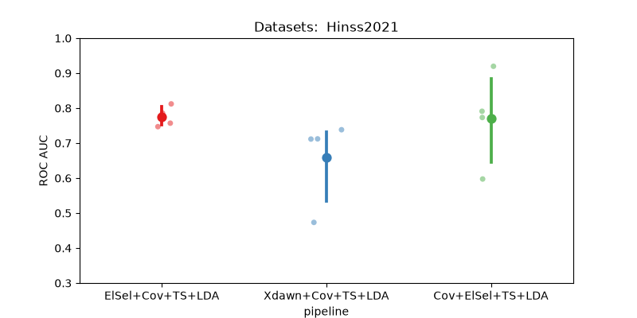

Note
Go to the end to download the full example code.
Hinss2021 classification example#
This example shows how to use the Hinss2021 dataset with the resting state paradigm.
In this example, we aim to determine the most effective channel selection strategy
for the moabb.datasets.Hinss2021 dataset.
The pipelines under consideration are:
Xdawn
Electrode selection based on time epochs data
Electrode selection based on covariance matrices
# License: BSD (3-clause)
import warnings
import numpy as np
import seaborn as sns
from matplotlib import pyplot as plt
from pyriemann.channelselection import ElectrodeSelection
from pyriemann.estimation import Covariances
from pyriemann.spatialfilters import Xdawn
from pyriemann.tangentspace import TangentSpace
from sklearn.base import TransformerMixin
from sklearn.discriminant_analysis import LinearDiscriminantAnalysis as LDA
from sklearn.pipeline import make_pipeline
from moabb import set_log_level
from moabb.datasets import Hinss2021
from moabb.evaluations import CrossSessionEvaluation
from moabb.paradigms import RestingStateToP300Adapter
# Suppressing future and runtime warnings for cleaner output
warnings.simplefilter(action="ignore", category=FutureWarning)
warnings.simplefilter(action="ignore", category=RuntimeWarning)
set_log_level("info")
Create util transformer#
Let’s create a scikit transformer mixin, that will select electrodes based on the covariance information
class EpochSelectChannel(TransformerMixin):
"""Select channels based on covariance information."""
def __init__(self, n_chan, cov_est):
self._chs_idx = None
self.n_chan = n_chan
self.cov_est = cov_est
def fit(self, X, _y=None):
# Get the covariances of the channels for each epoch.
covs = Covariances(estimator=self.cov_est).fit_transform(X)
# Get the average covariance between the channels
m = np.mean(covs, axis=0)
# Select the `n_chan` channels having the maximum covariances.
indices = np.unravel_index(
np.argpartition(m, -self.n_chan, axis=None)[-self.n_chan :], m.shape
)
# We will keep only these channels for the transform step.
self._chs_idx = np.unique(indices)
return self
def transform(self, X):
return X[:, self._chs_idx, :]
Initialization Process#
Define the experimental paradigm object (RestingState)
Load the datasets
Select a subset of subjects and specific events for analysis
# Here we define the mne events for the RestingState paradigm.
events = {"easy": 2, "diff": 3}
# The paradigm is adapted to the P300 paradigm.
paradigm = RestingStateToP300Adapter(events=events, tmin=0, tmax=0.5)
# We define a list with the dataset to use
datasets = [Hinss2021()]
# To reduce the computation time in the example, we will only use the
# first two subjects.
n__subjects = 2
title = "Datasets: "
for dataset in datasets:
title = title + " " + dataset.code
dataset.subject_list = dataset.subject_list[:n__subjects]
Create Pipelines#
Pipelines must be a dict of scikit-learning pipeline transformer.
pipelines = {}
pipelines["Xdawn+Cov+TS+LDA"] = make_pipeline(
Xdawn(nfilter=4), Covariances(estimator="lwf"), TangentSpace(), LDA()
)
pipelines["Cov+ElSel+TS+LDA"] = make_pipeline(
Covariances(estimator="lwf"), ElectrodeSelection(nelec=8), TangentSpace(), LDA()
)
# Pay attention here that the channel selection took place before computing the covariances:
# It is done on time epochs.
pipelines["ElSel+Cov+TS+LDA"] = make_pipeline(
EpochSelectChannel(n_chan=8, cov_est="lwf"),
Covariances(estimator="lwf"),
TangentSpace(),
LDA(),
)
Run evaluation#
Compare the pipeline using a cross session evaluation.
# Here should be cross-session
evaluation = CrossSessionEvaluation(paradigm=paradigm, datasets=datasets, overwrite=False)
results = evaluation.process(pipelines)
0%| | 0.00/181M [00:00<?, ?B/s]
0%| | 11.3k/181M [00:00<44:04, 68.5kB/s]
0%| | 37.9k/181M [00:00<24:12, 125kB/s]
0%| | 92.2k/181M [00:00<13:40, 221kB/s]
0%| | 173k/181M [00:00<09:07, 330kB/s]
0%| | 253k/181M [00:00<07:44, 389kB/s]
0%| | 368k/181M [00:00<06:07, 491kB/s]
0%| | 453k/181M [00:01<05:54, 509kB/s]
0%| | 518k/181M [00:01<06:19, 475kB/s]
0%|▏ | 600k/181M [00:01<06:12, 485kB/s]
0%|▏ | 731k/181M [00:01<05:09, 582kB/s]
0%|▏ | 797k/181M [00:01<05:41, 528kB/s]
0%|▏ | 878k/181M [00:01<05:46, 520kB/s]
1%|▏ | 959k/181M [00:02<05:49, 515kB/s]
1%|▏ | 1.04M/181M [00:02<05:51, 512kB/s]
1%|▎ | 1.19M/181M [00:02<04:44, 632kB/s]
1%|▎ | 1.27M/181M [00:02<05:02, 594kB/s]
1%|▎ | 1.35M/181M [00:02<05:16, 567kB/s]
1%|▎ | 1.43M/181M [00:02<05:28, 547kB/s]
1%|▎ | 1.58M/181M [00:03<04:33, 656kB/s]
1%|▎ | 1.66M/181M [00:03<04:54, 609kB/s]
1%|▍ | 1.74M/181M [00:03<05:10, 578kB/s]
1%|▍ | 1.88M/181M [00:03<04:37, 647kB/s]
1%|▍ | 1.99M/181M [00:03<04:30, 662kB/s]
1%|▍ | 2.07M/181M [00:03<04:50, 615kB/s]
1%|▍ | 2.22M/181M [00:04<04:14, 703kB/s]
1%|▌ | 2.37M/181M [00:04<03:53, 765kB/s]
1%|▌ | 2.51M/181M [00:04<03:41, 806kB/s]
1%|▌ | 2.64M/181M [00:04<03:42, 803kB/s]
2%|▌ | 2.72M/181M [00:04<04:10, 712kB/s]
2%|▌ | 2.80M/181M [00:04<04:43, 628kB/s]
2%|▋ | 2.92M/181M [00:05<04:25, 671kB/s]
2%|▋ | 3.00M/181M [00:05<04:47, 619kB/s]
2%|▋ | 3.15M/181M [00:05<04:13, 702kB/s]
2%|▋ | 3.23M/181M [00:05<04:36, 643kB/s]
2%|▋ | 3.36M/181M [00:05<04:16, 692kB/s]
2%|▋ | 3.48M/181M [00:05<04:15, 694kB/s]
2%|▊ | 3.56M/181M [00:06<04:39, 636kB/s]
2%|▊ | 3.71M/181M [00:06<04:07, 718kB/s]
2%|▊ | 3.78M/181M [00:06<04:38, 637kB/s]
2%|▊ | 3.85M/181M [00:06<05:02, 585kB/s]
2%|▊ | 3.95M/181M [00:06<04:59, 591kB/s]
2%|▉ | 4.08M/181M [00:06<04:30, 655kB/s]
2%|▉ | 4.16M/181M [00:06<04:50, 610kB/s]
2%|▉ | 4.31M/181M [00:07<04:12, 700kB/s]
2%|▉ | 4.39M/181M [00:07<04:35, 641kB/s]
2%|▉ | 4.48M/181M [00:07<04:54, 600kB/s]
3%|▉ | 4.61M/181M [00:07<04:26, 661kB/s]
3%|█ | 4.75M/181M [00:07<03:59, 735kB/s]
3%|█ | 4.88M/181M [00:07<03:52, 757kB/s]
3%|█ | 4.98M/181M [00:08<04:07, 712kB/s]
3%|█ | 5.11M/181M [00:08<03:58, 739kB/s]
3%|█▏ | 5.26M/181M [00:08<03:42, 790kB/s]
3%|█▏ | 5.34M/181M [00:08<04:09, 704kB/s]
3%|█▏ | 5.49M/181M [00:08<03:49, 765kB/s]
3%|█▏ | 5.57M/181M [00:08<04:15, 687kB/s]
3%|█▏ | 5.67M/181M [00:09<04:25, 661kB/s]
3%|█▏ | 5.80M/181M [00:09<04:08, 705kB/s]
3%|█▎ | 5.95M/181M [00:09<03:48, 766kB/s]
3%|█▎ | 6.08M/181M [00:09<03:44, 778kB/s]
3%|█▎ | 6.18M/181M [00:09<04:01, 725kB/s]
3%|█▎ | 6.29M/181M [00:09<04:02, 719kB/s]
4%|█▎ | 6.37M/181M [00:10<04:26, 655kB/s]
4%|█▍ | 6.49M/181M [00:10<04:20, 670kB/s]
4%|█▍ | 6.62M/181M [00:10<04:05, 712kB/s]
4%|█▍ | 6.70M/181M [00:10<04:29, 648kB/s]
4%|█▍ | 6.76M/181M [00:10<05:02, 576kB/s]
4%|█▍ | 6.85M/181M [00:10<05:15, 552kB/s]
4%|█▌ | 6.99M/181M [00:11<04:25, 656kB/s]
4%|█▌ | 7.08M/181M [00:11<04:45, 609kB/s]
4%|█▌ | 7.14M/181M [00:11<05:17, 547kB/s]
4%|█▌ | 7.29M/181M [00:11<04:26, 652kB/s]
4%|█▌ | 7.39M/181M [00:11<04:33, 634kB/s]
4%|█▌ | 7.53M/181M [00:11<04:03, 714kB/s]
4%|█▋ | 7.63M/181M [00:12<04:15, 680kB/s]
4%|█▋ | 7.73M/181M [00:12<04:24, 655kB/s]
4%|█▋ | 7.81M/181M [00:12<04:43, 611kB/s]
4%|█▋ | 7.91M/181M [00:12<04:43, 610kB/s]
4%|█▋ | 8.01M/181M [00:12<04:45, 606kB/s]
4%|█▋ | 8.12M/181M [00:12<04:32, 636kB/s]
5%|█▊ | 8.20M/181M [00:13<04:49, 597kB/s]
5%|█▊ | 8.35M/181M [00:13<04:10, 688kB/s]
5%|█▊ | 8.50M/181M [00:13<03:48, 755kB/s]
5%|█▊ | 8.58M/181M [00:13<04:15, 676kB/s]
5%|█▉ | 8.71M/181M [00:13<04:01, 713kB/s]
5%|█▉ | 8.87M/181M [00:13<03:36, 794kB/s]
5%|█▉ | 9.01M/181M [00:13<03:35, 798kB/s]
5%|█▉ | 9.15M/181M [00:14<03:26, 831kB/s]
5%|█▉ | 9.24M/181M [00:14<03:53, 735kB/s]
5%|██ | 9.36M/181M [00:14<03:48, 751kB/s]
5%|██ | 9.50M/181M [00:14<03:43, 768kB/s]
5%|██ | 9.61M/181M [00:14<03:48, 749kB/s]
5%|██ | 9.76M/181M [00:14<03:35, 796kB/s]
5%|██▏ | 9.89M/181M [00:15<03:34, 797kB/s]
6%|██▏ | 9.97M/181M [00:15<04:01, 709kB/s]
6%|██▏ | 10.1M/181M [00:15<03:42, 769kB/s]
6%|██▏ | 10.2M/181M [00:15<04:10, 683kB/s]
6%|██▏ | 10.3M/181M [00:15<03:54, 728kB/s]
6%|██▎ | 10.5M/181M [00:15<03:47, 750kB/s]
6%|██▎ | 10.5M/181M [00:16<04:11, 677kB/s]
6%|██▎ | 10.7M/181M [00:16<04:08, 686kB/s]
6%|██▎ | 10.7M/181M [00:16<04:29, 632kB/s]
6%|██▎ | 10.9M/181M [00:16<03:58, 713kB/s]
6%|██▎ | 11.0M/181M [00:16<04:21, 651kB/s]
6%|██▍ | 11.1M/181M [00:16<03:53, 728kB/s]
6%|██▍ | 11.2M/181M [00:17<03:45, 752kB/s]
6%|██▍ | 11.3M/181M [00:17<04:10, 678kB/s]
6%|██▍ | 11.4M/181M [00:17<04:19, 655kB/s]
6%|██▍ | 11.6M/181M [00:17<04:02, 700kB/s]
6%|██▌ | 11.7M/181M [00:17<03:42, 761kB/s]
7%|██▌ | 11.8M/181M [00:17<04:10, 675kB/s]
7%|██▌ | 11.9M/181M [00:18<03:53, 725kB/s]
7%|██▌ | 12.0M/181M [00:18<04:05, 687kB/s]
7%|██▌ | 12.1M/181M [00:18<04:26, 633kB/s]
7%|██▌ | 12.2M/181M [00:18<04:45, 592kB/s]
7%|██▋ | 12.3M/181M [00:18<04:17, 656kB/s]
7%|██▋ | 12.4M/181M [00:18<04:49, 583kB/s]
7%|██▋ | 12.5M/181M [00:19<04:09, 676kB/s]
7%|██▋ | 12.7M/181M [00:19<03:55, 715kB/s]
7%|██▊ | 12.8M/181M [00:19<03:37, 773kB/s]
7%|██▊ | 12.9M/181M [00:19<03:35, 779kB/s]
7%|██▊ | 13.1M/181M [00:19<03:25, 816kB/s]
7%|██▊ | 13.2M/181M [00:19<03:52, 722kB/s]
7%|██▊ | 13.3M/181M [00:20<03:44, 749kB/s]
7%|██▉ | 13.4M/181M [00:20<04:08, 676kB/s]
7%|██▉ | 13.5M/181M [00:20<04:28, 625kB/s]
8%|██▉ | 13.6M/181M [00:20<03:56, 708kB/s]
8%|██▉ | 13.7M/181M [00:20<03:38, 767kB/s]
8%|██▉ | 13.8M/181M [00:20<04:06, 679kB/s]
8%|███ | 14.0M/181M [00:20<03:49, 727kB/s]
8%|███ | 14.0M/181M [00:21<04:13, 659kB/s]
8%|███ | 14.1M/181M [00:21<04:33, 611kB/s]
8%|███ | 14.2M/181M [00:21<04:34, 608kB/s]
8%|███ | 14.3M/181M [00:21<04:49, 577kB/s]
8%|███ | 14.4M/181M [00:21<04:59, 556kB/s]
8%|███ | 14.5M/181M [00:21<05:08, 540kB/s]
8%|███▏ | 14.6M/181M [00:22<04:17, 647kB/s]
8%|███▏ | 14.7M/181M [00:22<04:00, 692kB/s]
8%|███▏ | 14.8M/181M [00:22<04:21, 636kB/s]
8%|███▏ | 14.9M/181M [00:22<04:38, 596kB/s]
8%|███▏ | 15.1M/181M [00:22<04:00, 689kB/s]
8%|███▎ | 15.1M/181M [00:22<04:31, 611kB/s]
8%|███▎ | 15.2M/181M [00:23<04:50, 570kB/s]
8%|███▎ | 15.3M/181M [00:23<04:07, 671kB/s]
9%|███▎ | 15.4M/181M [00:23<04:26, 621kB/s]
9%|███▎ | 15.6M/181M [00:23<04:04, 677kB/s]
9%|███▎ | 15.6M/181M [00:23<04:34, 602kB/s]
9%|███▍ | 15.7M/181M [00:23<04:37, 596kB/s]
9%|███▍ | 15.8M/181M [00:24<04:22, 629kB/s]
9%|███▍ | 16.0M/181M [00:24<03:51, 713kB/s]
9%|███▍ | 16.1M/181M [00:24<03:33, 773kB/s]
9%|███▍ | 16.2M/181M [00:24<03:58, 691kB/s]
9%|███▌ | 16.3M/181M [00:24<04:07, 665kB/s]
9%|███▌ | 16.4M/181M [00:24<03:52, 708kB/s]
9%|███▌ | 16.6M/181M [00:25<03:42, 738kB/s]
9%|███▌ | 16.7M/181M [00:25<03:46, 727kB/s]
9%|███▌ | 16.8M/181M [00:25<03:38, 751kB/s]
9%|███▋ | 16.9M/181M [00:25<04:02, 677kB/s]
9%|███▋ | 17.1M/181M [00:25<03:39, 746kB/s]
9%|███▋ | 17.1M/181M [00:25<04:03, 674kB/s]
10%|███▋ | 17.2M/181M [00:26<04:22, 623kB/s]
10%|███▋ | 17.3M/181M [00:26<04:02, 675kB/s]
10%|███▊ | 17.5M/181M [00:26<03:48, 715kB/s]
10%|███▊ | 17.6M/181M [00:26<03:31, 773kB/s]
10%|███▊ | 17.7M/181M [00:26<03:36, 753kB/s]
10%|███▊ | 17.8M/181M [00:26<04:05, 665kB/s]
10%|███▊ | 17.9M/181M [00:26<04:20, 627kB/s]
10%|███▉ | 18.0M/181M [00:27<04:22, 620kB/s]
10%|███▉ | 18.1M/181M [00:27<04:38, 585kB/s]
10%|███▉ | 18.2M/181M [00:27<04:50, 561kB/s]
10%|███▉ | 18.3M/181M [00:27<04:05, 663kB/s]
10%|███▉ | 18.5M/181M [00:27<03:40, 736kB/s]
10%|███▉ | 18.5M/181M [00:27<04:09, 653kB/s]
10%|████ | 18.6M/181M [00:28<04:33, 593kB/s]
10%|████ | 18.7M/181M [00:28<04:46, 566kB/s]
10%|████ | 18.8M/181M [00:28<05:13, 517kB/s]
10%|████ | 18.8M/181M [00:28<05:17, 511kB/s]
10%|████ | 19.0M/181M [00:28<04:29, 600kB/s]
11%|████ | 19.1M/181M [00:28<03:54, 690kB/s]
11%|████▏ | 19.2M/181M [00:29<04:15, 633kB/s]
11%|████▏ | 19.3M/181M [00:29<04:31, 595kB/s]
11%|████▏ | 19.4M/181M [00:29<04:31, 596kB/s]
11%|████▏ | 19.5M/181M [00:29<04:43, 569kB/s]
11%|████▏ | 19.5M/181M [00:29<04:53, 550kB/s]
11%|████▏ | 19.6M/181M [00:29<05:01, 536kB/s]
11%|████▎ | 19.8M/181M [00:30<04:09, 647kB/s]
11%|████▎ | 19.8M/181M [00:30<04:40, 574kB/s]
11%|████▎ | 19.9M/181M [00:30<04:51, 552kB/s]
11%|████▎ | 20.0M/181M [00:30<04:15, 629kB/s]
11%|████▎ | 20.1M/181M [00:30<04:18, 622kB/s]
11%|████▎ | 20.3M/181M [00:30<03:47, 707kB/s]
11%|████▍ | 20.4M/181M [00:31<04:09, 645kB/s]
11%|████▍ | 20.5M/181M [00:31<04:13, 632kB/s]
11%|████▍ | 20.6M/181M [00:31<04:16, 625kB/s]
11%|████▍ | 20.6M/181M [00:31<04:32, 589kB/s]
11%|████▍ | 20.7M/181M [00:31<04:44, 563kB/s]
12%|████▍ | 20.9M/181M [00:31<04:00, 667kB/s]
12%|████▌ | 21.0M/181M [00:32<04:19, 616kB/s]
12%|████▌ | 21.0M/181M [00:32<04:34, 583kB/s]
12%|████▌ | 21.1M/181M [00:32<04:45, 560kB/s]
12%|████▌ | 21.3M/181M [00:32<04:00, 663kB/s]
12%|████▌ | 21.4M/181M [00:32<04:19, 616kB/s]
12%|████▌ | 21.4M/181M [00:32<04:34, 581kB/s]
12%|████▋ | 21.6M/181M [00:32<03:55, 678kB/s]
12%|████▋ | 21.7M/181M [00:33<04:14, 626kB/s]
12%|████▋ | 21.7M/181M [00:33<04:44, 560kB/s]
12%|████▋ | 21.9M/181M [00:33<03:59, 664kB/s]
12%|████▋ | 22.0M/181M [00:33<04:18, 615kB/s]
12%|████▋ | 22.0M/181M [00:33<04:33, 582kB/s]
12%|████▊ | 22.2M/181M [00:33<04:04, 650kB/s]
12%|████▊ | 22.3M/181M [00:34<03:58, 667kB/s]
12%|████▊ | 22.4M/181M [00:34<04:04, 648kB/s]
12%|████▊ | 22.5M/181M [00:34<04:09, 636kB/s]
12%|████▊ | 22.6M/181M [00:34<03:41, 716kB/s]
13%|████▉ | 22.7M/181M [00:34<04:09, 634kB/s]
13%|████▉ | 22.8M/181M [00:34<04:30, 584kB/s]
13%|████▉ | 22.9M/181M [00:35<03:53, 678kB/s]
13%|████▉ | 23.1M/181M [00:35<03:40, 715kB/s]
13%|████▉ | 23.2M/181M [00:35<03:32, 743kB/s]
13%|█████ | 23.3M/181M [00:35<03:54, 672kB/s]
13%|█████ | 23.3M/181M [00:35<04:13, 621kB/s]
13%|█████ | 23.5M/181M [00:35<03:53, 674kB/s]
13%|█████ | 23.6M/181M [00:36<04:01, 651kB/s]
13%|█████ | 23.7M/181M [00:36<04:19, 607kB/s]
13%|█████ | 23.8M/181M [00:36<03:55, 666kB/s]
13%|█████▏ | 23.9M/181M [00:36<03:51, 678kB/s]
13%|█████▏ | 24.0M/181M [00:36<03:48, 687kB/s]
13%|█████▏ | 24.2M/181M [00:36<03:28, 751kB/s]
13%|█████▏ | 24.2M/181M [00:37<03:51, 677kB/s]
13%|█████▎ | 24.4M/181M [00:37<03:39, 715kB/s]
14%|█████▎ | 24.5M/181M [00:37<03:30, 742kB/s]
14%|█████▎ | 24.7M/181M [00:37<03:17, 790kB/s]
14%|█████▎ | 24.8M/181M [00:37<03:24, 765kB/s]
14%|█████▎ | 24.9M/181M [00:37<03:20, 778kB/s]
14%|█████▍ | 25.0M/181M [00:38<03:10, 818kB/s]
14%|█████▍ | 25.2M/181M [00:38<03:11, 813kB/s]
14%|█████▍ | 25.3M/181M [00:38<03:19, 781kB/s]
14%|█████▍ | 25.4M/181M [00:38<03:43, 697kB/s]
14%|█████▍ | 25.5M/181M [00:38<03:52, 670kB/s]
14%|█████▌ | 25.6M/181M [00:38<04:10, 620kB/s]
14%|█████▌ | 25.7M/181M [00:39<03:50, 675kB/s]
14%|█████▌ | 25.8M/181M [00:39<03:28, 745kB/s]
14%|█████▌ | 26.0M/181M [00:39<03:23, 760kB/s]
14%|█████▌ | 26.1M/181M [00:39<03:12, 804kB/s]
14%|█████▋ | 26.2M/181M [00:39<03:37, 711kB/s]
15%|█████▋ | 26.3M/181M [00:39<03:58, 650kB/s]
15%|█████▋ | 26.4M/181M [00:39<03:32, 727kB/s]
15%|█████▋ | 26.5M/181M [00:40<03:53, 661kB/s]
15%|█████▋ | 26.6M/181M [00:40<03:48, 675kB/s]
15%|█████▊ | 26.7M/181M [00:40<03:36, 713kB/s]
15%|█████▊ | 26.9M/181M [00:40<03:37, 710kB/s]
15%|█████▊ | 26.9M/181M [00:40<03:58, 647kB/s]
15%|█████▊ | 27.1M/181M [00:40<03:32, 725kB/s]
15%|█████▊ | 27.2M/181M [00:41<03:53, 660kB/s]
15%|█████▊ | 27.3M/181M [00:41<04:11, 612kB/s]
15%|█████▉ | 27.4M/181M [00:41<03:39, 701kB/s]
15%|█████▉ | 27.5M/181M [00:41<03:21, 761kB/s]
15%|█████▉ | 27.7M/181M [00:41<03:17, 775kB/s]
15%|█████▉ | 27.8M/181M [00:41<03:33, 718kB/s]
15%|██████ | 27.9M/181M [00:42<03:53, 655kB/s]
15%|██████ | 27.9M/181M [00:42<04:10, 610kB/s]
16%|██████ | 28.1M/181M [00:42<03:38, 699kB/s]
16%|██████ | 28.2M/181M [00:42<04:06, 620kB/s]
16%|██████ | 28.3M/181M [00:42<03:39, 695kB/s]
16%|██████ | 28.4M/181M [00:42<03:38, 699kB/s]
16%|██████▏ | 28.6M/181M [00:43<03:20, 760kB/s]
16%|██████▏ | 28.7M/181M [00:43<03:33, 714kB/s]
16%|██████▏ | 28.8M/181M [00:43<03:25, 742kB/s]
16%|██████▏ | 28.9M/181M [00:43<03:12, 790kB/s]
16%|██████▎ | 29.1M/181M [00:43<03:11, 795kB/s]
16%|██████▎ | 29.2M/181M [00:43<03:17, 769kB/s]
16%|██████▎ | 29.3M/181M [00:44<03:41, 687kB/s]
16%|██████▎ | 29.4M/181M [00:44<03:44, 677kB/s]
16%|██████▎ | 29.5M/181M [00:44<04:07, 613kB/s]
16%|██████▎ | 29.6M/181M [00:44<04:12, 601kB/s]
16%|██████▍ | 29.6M/181M [00:44<04:26, 568kB/s]
16%|██████▍ | 29.7M/181M [00:44<04:35, 550kB/s]
16%|██████▍ | 29.8M/181M [00:45<04:41, 537kB/s]
17%|██████▍ | 29.9M/181M [00:45<05:03, 498kB/s]
17%|██████▍ | 30.0M/181M [00:45<05:03, 498kB/s]
17%|██████▍ | 30.1M/181M [00:45<04:15, 591kB/s]
17%|██████▌ | 30.2M/181M [00:45<03:39, 687kB/s]
17%|██████▌ | 30.3M/181M [00:45<03:58, 632kB/s]
17%|██████▌ | 30.4M/181M [00:46<03:40, 684kB/s]
17%|██████▌ | 30.5M/181M [00:46<03:58, 630kB/s]
17%|██████▌ | 30.6M/181M [00:46<04:13, 593kB/s]
17%|██████▌ | 30.7M/181M [00:46<03:48, 657kB/s]
17%|██████▋ | 30.8M/181M [00:46<04:05, 612kB/s]
17%|██████▋ | 31.0M/181M [00:46<03:34, 699kB/s]
17%|██████▋ | 31.0M/181M [00:47<03:53, 641kB/s]
17%|██████▋ | 31.1M/181M [00:47<03:57, 631kB/s]
17%|██████▋ | 31.2M/181M [00:47<04:12, 593kB/s]
17%|██████▋ | 31.3M/181M [00:47<04:23, 567kB/s]
17%|██████▊ | 31.4M/181M [00:47<04:32, 549kB/s]
17%|██████▊ | 31.5M/181M [00:47<04:40, 533kB/s]
17%|██████▊ | 31.6M/181M [00:47<04:02, 616kB/s]
18%|██████▊ | 31.8M/181M [00:48<03:32, 703kB/s]
18%|██████▊ | 31.9M/181M [00:48<03:23, 735kB/s]
18%|██████▉ | 32.0M/181M [00:48<03:10, 784kB/s]
18%|██████▉ | 32.1M/181M [00:48<03:15, 760kB/s]
18%|██████▉ | 32.3M/181M [00:48<03:11, 775kB/s]
18%|██████▉ | 32.4M/181M [00:48<03:02, 815kB/s]
18%|███████ | 32.5M/181M [00:49<03:25, 721kB/s]
18%|███████ | 32.6M/181M [00:49<03:52, 640kB/s]
18%|███████ | 32.7M/181M [00:49<04:14, 584kB/s]
18%|███████ | 32.7M/181M [00:49<04:25, 559kB/s]
18%|███████ | 32.9M/181M [00:49<03:53, 634kB/s]
18%|███████ | 33.0M/181M [00:49<03:35, 686kB/s]
18%|███████▏ | 33.1M/181M [00:50<03:16, 751kB/s]
18%|███████▏ | 33.2M/181M [00:50<03:28, 708kB/s]
18%|███████▏ | 33.3M/181M [00:50<03:55, 628kB/s]
18%|███████▏ | 33.5M/181M [00:50<03:30, 701kB/s]
19%|███████▏ | 33.5M/181M [00:50<03:49, 643kB/s]
19%|███████▏ | 33.6M/181M [00:50<04:18, 570kB/s]
19%|███████▎ | 33.7M/181M [00:51<04:27, 551kB/s]
19%|███████▎ | 33.8M/181M [00:51<04:34, 537kB/s]
19%|███████▎ | 33.9M/181M [00:51<03:46, 649kB/s]
19%|███████▎ | 34.0M/181M [00:51<04:03, 605kB/s]
19%|███████▎ | 34.1M/181M [00:51<03:31, 695kB/s]
19%|███████▎ | 34.2M/181M [00:51<03:50, 637kB/s]
19%|███████▍ | 34.3M/181M [00:52<04:05, 599kB/s]
19%|███████▍ | 34.4M/181M [00:52<04:17, 571kB/s]
19%|███████▍ | 34.5M/181M [00:52<03:37, 672kB/s]
19%|███████▍ | 34.6M/181M [00:52<03:55, 622kB/s]
19%|███████▍ | 34.7M/181M [00:52<03:36, 676kB/s]
19%|███████▌ | 34.9M/181M [00:52<03:15, 746kB/s]
19%|███████▌ | 35.0M/181M [00:53<03:36, 674kB/s]
19%|███████▌ | 35.1M/181M [00:53<03:43, 654kB/s]
19%|███████▌ | 35.2M/181M [00:53<03:28, 698kB/s]
19%|███████▌ | 35.3M/181M [00:53<03:48, 639kB/s]
20%|███████▌ | 35.4M/181M [00:53<04:04, 596kB/s]
20%|███████▋ | 35.5M/181M [00:53<03:30, 690kB/s]
20%|███████▋ | 35.6M/181M [00:53<03:49, 635kB/s]
20%|███████▋ | 35.7M/181M [00:54<04:04, 596kB/s]
20%|███████▋ | 35.8M/181M [00:54<03:41, 657kB/s]
20%|███████▋ | 35.9M/181M [00:54<03:46, 642kB/s]
20%|███████▊ | 36.0M/181M [00:54<04:01, 602kB/s]
20%|███████▊ | 36.1M/181M [00:54<04:27, 542kB/s]
20%|███████▊ | 36.2M/181M [00:54<03:52, 622kB/s]
20%|███████▊ | 36.3M/181M [00:55<03:55, 614kB/s]
20%|███████▊ | 36.4M/181M [00:55<03:35, 671kB/s]
20%|███████▊ | 36.5M/181M [00:55<03:52, 622kB/s]
20%|███████▉ | 36.6M/181M [00:55<03:24, 708kB/s]
20%|███████▉ | 36.8M/181M [00:55<03:16, 736kB/s]
20%|███████▉ | 36.9M/181M [00:55<03:36, 667kB/s]
20%|███████▉ | 37.0M/181M [00:56<03:14, 740kB/s]
20%|███████▉ | 37.1M/181M [00:56<03:34, 670kB/s]
21%|████████ | 37.2M/181M [00:56<03:13, 742kB/s]
21%|████████ | 37.4M/181M [00:56<03:10, 756kB/s]
21%|████████ | 37.5M/181M [00:56<03:13, 741kB/s]
21%|████████ | 37.5M/181M [00:56<03:38, 657kB/s]
21%|████████ | 37.6M/181M [00:57<03:50, 623kB/s]
21%|████████ | 37.7M/181M [00:57<04:17, 557kB/s]
21%|████████▏ | 37.8M/181M [00:57<04:39, 512kB/s]
21%|████████▏ | 37.9M/181M [00:57<03:58, 599kB/s]
21%|████████▏ | 38.0M/181M [00:57<04:24, 541kB/s]
21%|████████▏ | 38.1M/181M [00:57<03:39, 650kB/s]
21%|████████▏ | 38.2M/181M [00:58<03:24, 697kB/s]
21%|████████▎ | 38.3M/181M [00:58<03:43, 638kB/s]
21%|████████▎ | 38.5M/181M [00:58<03:18, 719kB/s]
21%|████████▎ | 38.6M/181M [00:58<03:11, 745kB/s]
21%|████████▎ | 38.7M/181M [00:58<04:34, 518kB/s]
21%|████████▎ | 38.8M/181M [00:59<04:23, 541kB/s]
21%|████████▎ | 38.9M/181M [00:59<04:27, 532kB/s]
22%|████████▍ | 39.0M/181M [00:59<03:54, 605kB/s]
22%|████████▍ | 39.1M/181M [00:59<03:34, 662kB/s]
22%|████████▍ | 39.2M/181M [00:59<03:50, 616kB/s]
22%|████████▍ | 39.3M/181M [00:59<03:30, 672kB/s]
22%|████████▌ | 39.5M/181M [00:59<03:19, 710kB/s]
22%|████████▌ | 39.6M/181M [01:00<03:03, 769kB/s]
22%|████████▌ | 39.7M/181M [01:00<03:24, 690kB/s]
22%|████████▌ | 39.8M/181M [01:00<03:15, 724kB/s]
22%|████████▌ | 40.0M/181M [01:00<02:55, 805kB/s]
22%|████████▋ | 40.1M/181M [01:00<03:16, 716kB/s]
22%|████████▋ | 40.2M/181M [01:00<03:35, 653kB/s]
22%|████████▋ | 40.3M/181M [01:01<03:30, 669kB/s]
22%|████████▋ | 40.4M/181M [01:01<03:09, 741kB/s]
22%|████████▋ | 40.5M/181M [01:01<03:12, 728kB/s]
22%|████████▊ | 40.6M/181M [01:01<03:22, 692kB/s]
22%|████████▊ | 40.7M/181M [01:01<03:40, 636kB/s]
23%|████████▊ | 40.9M/181M [01:01<03:15, 717kB/s]
23%|████████▊ | 40.9M/181M [01:02<03:34, 652kB/s]
23%|████████▊ | 41.1M/181M [01:02<03:12, 728kB/s]
23%|████████▊ | 41.2M/181M [01:02<03:36, 646kB/s]
23%|████████▉ | 41.3M/181M [01:02<03:16, 710kB/s]
23%|████████▉ | 41.4M/181M [01:02<03:35, 648kB/s]
23%|████████▉ | 41.5M/181M [01:02<03:21, 694kB/s]
23%|████████▉ | 41.6M/181M [01:03<03:11, 728kB/s]
23%|████████▉ | 41.7M/181M [01:03<03:21, 691kB/s]
23%|█████████ | 41.8M/181M [01:03<03:29, 666kB/s]
23%|█████████ | 41.9M/181M [01:03<03:55, 592kB/s]
23%|█████████ | 42.0M/181M [01:03<04:07, 562kB/s]
23%|█████████ | 42.1M/181M [01:03<03:50, 602kB/s]
23%|█████████ | 42.2M/181M [01:04<03:28, 664kB/s]
23%|█████████▏ | 42.4M/181M [01:04<03:08, 736kB/s]
23%|█████████▏ | 42.5M/181M [01:04<03:28, 666kB/s]
24%|█████████▏ | 42.5M/181M [01:04<03:44, 616kB/s]
24%|█████████▏ | 42.6M/181M [01:04<03:57, 583kB/s]
24%|█████████▏ | 42.7M/181M [01:04<04:21, 529kB/s]
24%|█████████▏ | 42.8M/181M [01:05<03:45, 612kB/s]
24%|█████████▎ | 43.0M/181M [01:05<03:25, 671kB/s]
24%|█████████▎ | 43.0M/181M [01:05<03:42, 621kB/s]
24%|█████████▎ | 43.1M/181M [01:05<03:44, 614kB/s]
24%|█████████▎ | 43.3M/181M [01:05<03:25, 671kB/s]
24%|█████████▎ | 43.4M/181M [01:05<03:21, 682kB/s]
24%|█████████▎ | 43.5M/181M [01:06<03:38, 630kB/s]
24%|█████████▍ | 43.6M/181M [01:06<03:12, 714kB/s]
24%|█████████▍ | 43.7M/181M [01:06<03:31, 649kB/s]
24%|█████████▍ | 43.8M/181M [01:06<03:46, 606kB/s]
24%|█████████▍ | 43.9M/181M [01:06<03:59, 574kB/s]
24%|█████████▍ | 43.9M/181M [01:06<04:21, 524kB/s]
24%|█████████▍ | 44.0M/181M [01:06<03:44, 609kB/s]
24%|█████████▌ | 44.1M/181M [01:07<03:57, 576kB/s]
24%|█████████▌ | 44.3M/181M [01:07<03:32, 643kB/s]
24%|█████████▌ | 44.3M/181M [01:07<03:47, 601kB/s]
25%|█████████▌ | 44.4M/181M [01:07<03:58, 573kB/s]
25%|█████████▌ | 44.5M/181M [01:07<04:07, 553kB/s]
25%|█████████▌ | 44.6M/181M [01:07<03:36, 629kB/s]
25%|█████████▋ | 44.7M/181M [01:08<03:39, 621kB/s]
25%|█████████▋ | 44.8M/181M [01:08<03:52, 586kB/s]
25%|█████████▋ | 45.0M/181M [01:08<03:19, 683kB/s]
25%|█████████▋ | 45.0M/181M [01:08<03:35, 630kB/s]
25%|█████████▋ | 45.2M/181M [01:08<03:10, 712kB/s]
25%|█████████▊ | 45.3M/181M [01:08<03:35, 631kB/s]
25%|█████████▊ | 45.4M/181M [01:09<03:21, 672kB/s]
25%|█████████▊ | 45.5M/181M [01:09<03:27, 652kB/s]
25%|█████████▊ | 45.6M/181M [01:09<03:32, 638kB/s]
25%|█████████▊ | 45.7M/181M [01:09<03:46, 598kB/s]
25%|█████████▊ | 45.8M/181M [01:09<03:45, 600kB/s]
25%|█████████▉ | 45.8M/181M [01:09<03:57, 569kB/s]
25%|█████████▉ | 46.0M/181M [01:10<03:30, 640kB/s]
25%|█████████▉ | 46.1M/181M [01:10<03:34, 629kB/s]
25%|█████████▉ | 46.2M/181M [01:10<03:48, 591kB/s]
26%|█████████▉ | 46.2M/181M [01:10<03:58, 566kB/s]
26%|█████████▉ | 46.4M/181M [01:10<03:31, 637kB/s]
26%|██████████ | 46.6M/181M [01:10<02:29, 900kB/s]
26%|██████████ | 46.7M/181M [01:11<02:48, 795kB/s]
26%|██████████ | 46.8M/181M [01:11<03:10, 705kB/s]
26%|██████████ | 46.9M/181M [01:11<03:35, 624kB/s]
26%|██████████ | 47.0M/181M [01:11<03:34, 626kB/s]
26%|██████████▏ | 47.1M/181M [01:11<03:16, 680kB/s]
26%|██████████▏ | 47.2M/181M [01:11<03:33, 628kB/s]
26%|██████████▏ | 47.3M/181M [01:12<03:16, 681kB/s]
26%|██████████▏ | 47.4M/181M [01:12<03:33, 627kB/s]
26%|██████████▏ | 47.5M/181M [01:12<03:07, 711kB/s]
26%|██████████▎ | 47.6M/181M [01:12<03:26, 647kB/s]
26%|██████████▎ | 47.7M/181M [01:12<03:11, 695kB/s]
26%|██████████▎ | 47.8M/181M [01:12<03:19, 669kB/s]
26%|██████████▎ | 48.0M/181M [01:12<03:07, 709kB/s]
27%|██████████▎ | 48.1M/181M [01:13<02:53, 766kB/s]
27%|██████████▍ | 48.2M/181M [01:13<03:13, 688kB/s]
27%|██████████▍ | 48.3M/181M [01:13<03:37, 611kB/s]
27%|██████████▍ | 48.4M/181M [01:13<03:20, 661kB/s]
27%|██████████▍ | 48.5M/181M [01:13<03:35, 614kB/s]
27%|██████████▍ | 48.6M/181M [01:13<03:08, 703kB/s]
27%|██████████▍ | 48.7M/181M [01:14<03:26, 640kB/s]
27%|██████████▌ | 48.8M/181M [01:14<03:52, 569kB/s]
27%|██████████▌ | 48.9M/181M [01:14<04:00, 550kB/s]
27%|██████████▌ | 48.9M/181M [01:14<04:07, 533kB/s]
27%|██████████▌ | 49.0M/181M [01:14<04:11, 525kB/s]
27%|██████████▌ | 49.2M/181M [01:14<03:25, 640kB/s]
27%|██████████▌ | 49.2M/181M [01:15<03:39, 600kB/s]
27%|██████████▋ | 49.4M/181M [01:15<03:10, 692kB/s]
27%|██████████▋ | 49.5M/181M [01:15<03:34, 613kB/s]
27%|██████████▋ | 49.6M/181M [01:15<03:10, 690kB/s]
27%|██████████▋ | 49.7M/181M [01:15<03:01, 724kB/s]
28%|██████████▋ | 49.8M/181M [01:15<03:19, 658kB/s]
28%|██████████▊ | 49.9M/181M [01:16<03:23, 643kB/s]
28%|██████████▊ | 50.0M/181M [01:16<03:38, 600kB/s]
28%|██████████▊ | 50.1M/181M [01:16<03:49, 571kB/s]
28%|██████████▊ | 50.2M/181M [01:16<03:23, 642kB/s]
28%|██████████▊ | 50.3M/181M [01:16<03:37, 601kB/s]
28%|██████████▊ | 50.4M/181M [01:16<03:16, 664kB/s]
28%|██████████▉ | 50.6M/181M [01:17<02:57, 735kB/s]
28%|██████████▉ | 50.6M/181M [01:17<03:20, 650kB/s]
28%|██████████▉ | 50.8M/181M [01:17<03:02, 713kB/s]
28%|██████████▉ | 50.9M/181M [01:17<03:19, 651kB/s]
28%|██████████▉ | 50.9M/181M [01:17<03:45, 577kB/s]
28%|██████████▉ | 51.0M/181M [01:17<03:31, 613kB/s]
28%|███████████ | 51.1M/181M [01:18<03:43, 581kB/s]
28%|███████████ | 51.2M/181M [01:18<04:05, 528kB/s]
28%|███████████ | 51.3M/181M [01:18<03:55, 552kB/s]
28%|███████████ | 51.4M/181M [01:18<03:16, 659kB/s]
28%|███████████ | 51.5M/181M [01:18<03:41, 584kB/s]
28%|███████████ | 51.6M/181M [01:18<03:52, 556kB/s]
29%|███████████▏ | 51.7M/181M [01:18<03:15, 662kB/s]
29%|███████████▏ | 51.9M/181M [01:19<03:02, 706kB/s]
29%|███████████▏ | 52.0M/181M [01:19<02:48, 767kB/s]
29%|███████████▏ | 52.1M/181M [01:19<03:09, 679kB/s]
29%|███████████▏ | 52.2M/181M [01:19<03:05, 695kB/s]
29%|███████████▎ | 52.3M/181M [01:19<03:21, 639kB/s]
29%|███████████▎ | 52.4M/181M [01:19<02:58, 719kB/s]
29%|███████████▎ | 52.6M/181M [01:20<02:45, 776kB/s]
29%|███████████▎ | 52.7M/181M [01:20<03:05, 692kB/s]
29%|███████████▎ | 52.8M/181M [01:20<02:56, 727kB/s]
29%|███████████▍ | 52.9M/181M [01:20<03:14, 660kB/s]
29%|███████████▍ | 53.0M/181M [01:20<03:29, 612kB/s]
29%|███████████▍ | 53.1M/181M [01:20<03:10, 670kB/s]
29%|███████████▍ | 53.2M/181M [01:21<02:53, 736kB/s]
29%|███████████▍ | 53.3M/181M [01:21<03:11, 668kB/s]
30%|███████████▌ | 53.5M/181M [01:21<02:59, 710kB/s]
30%|███████████▌ | 53.5M/181M [01:21<03:07, 679kB/s]
30%|███████████▌ | 53.6M/181M [01:21<03:23, 627kB/s]
30%|███████████▌ | 53.7M/181M [01:21<03:36, 589kB/s]
30%|███████████▌ | 53.8M/181M [01:22<03:45, 564kB/s]
30%|███████████▌ | 53.9M/181M [01:22<03:52, 546kB/s]
30%|███████████▋ | 54.0M/181M [01:22<03:13, 655kB/s]
30%|███████████▋ | 54.1M/181M [01:22<03:27, 611kB/s]
30%|███████████▋ | 54.2M/181M [01:22<03:09, 668kB/s]
30%|███████████▋ | 54.3M/181M [01:22<03:24, 620kB/s]
30%|███████████▋ | 54.4M/181M [01:23<03:37, 583kB/s]
30%|███████████▊ | 54.5M/181M [01:23<03:05, 680kB/s]
30%|███████████▊ | 54.6M/181M [01:23<03:21, 628kB/s]
30%|███████████▊ | 54.7M/181M [01:23<03:24, 619kB/s]
30%|███████████▊ | 54.8M/181M [01:23<03:15, 645kB/s]
30%|███████████▊ | 55.0M/181M [01:23<03:01, 693kB/s]
30%|███████████▊ | 55.1M/181M [01:24<03:08, 667kB/s]
30%|███████████▉ | 55.1M/181M [01:24<03:32, 592kB/s]
31%|███████████▉ | 55.2M/181M [01:24<03:32, 593kB/s]
31%|███████████▉ | 55.3M/181M [01:24<03:21, 624kB/s]
31%|███████████▉ | 55.5M/181M [01:24<02:56, 710kB/s]
31%|███████████▉ | 55.6M/181M [01:24<02:49, 739kB/s]
31%|████████████ | 55.8M/181M [01:25<02:38, 789kB/s]
31%|████████████ | 55.9M/181M [01:25<02:50, 732kB/s]
31%|████████████ | 55.9M/181M [01:25<03:12, 649kB/s]
31%|████████████ | 56.0M/181M [01:25<03:21, 621kB/s]
31%|████████████ | 56.1M/181M [01:25<03:44, 557kB/s]
31%|████████████ | 56.2M/181M [01:25<03:50, 542kB/s]
31%|████████████▏ | 56.3M/181M [01:25<03:12, 649kB/s]
31%|████████████▏ | 56.4M/181M [01:26<03:06, 667kB/s]
31%|████████████▏ | 56.5M/181M [01:26<03:21, 618kB/s]
31%|████████████▏ | 56.7M/181M [01:26<02:56, 705kB/s]
31%|████████████▏ | 56.8M/181M [01:26<03:13, 642kB/s]
31%|████████████▎ | 56.9M/181M [01:26<02:39, 780kB/s]
32%|████████████▎ | 57.1M/181M [01:26<02:31, 817kB/s]
32%|████████████▎ | 57.2M/181M [01:27<02:51, 724kB/s]
32%|████████████▎ | 57.3M/181M [01:27<02:59, 689kB/s]
32%|████████████▎ | 57.4M/181M [01:27<03:06, 662kB/s]
32%|████████████▍ | 57.5M/181M [01:27<02:54, 706kB/s]
32%|████████████▍ | 57.6M/181M [01:27<03:02, 676kB/s]
32%|████████████▍ | 57.7M/181M [01:27<02:59, 685kB/s]
32%|████████████▍ | 57.8M/181M [01:28<02:50, 722kB/s]
32%|████████████▍ | 57.9M/181M [01:28<03:07, 655kB/s]
32%|████████████▌ | 58.0M/181M [01:28<02:55, 701kB/s]
32%|████████████▌ | 58.2M/181M [01:28<02:40, 763kB/s]
32%|████████████▌ | 58.3M/181M [01:28<02:59, 685kB/s]
32%|████████████▌ | 58.4M/181M [01:28<02:43, 750kB/s]
32%|████████████▌ | 58.6M/181M [01:29<02:39, 767kB/s]
32%|████████████▋ | 58.7M/181M [01:29<02:31, 810kB/s]
32%|████████████▋ | 58.8M/181M [01:29<02:50, 719kB/s]
33%|████████████▋ | 58.9M/181M [01:29<02:43, 745kB/s]
33%|████████████▋ | 59.0M/181M [01:29<03:02, 670kB/s]
33%|████████████▋ | 59.1M/181M [01:29<02:44, 742kB/s]
33%|████████████▊ | 59.3M/181M [01:30<02:34, 790kB/s]
33%|████████████▊ | 59.4M/181M [01:30<02:32, 795kB/s]
33%|████████████▊ | 59.5M/181M [01:30<02:38, 767kB/s]
33%|████████████▊ | 59.7M/181M [01:30<02:36, 777kB/s]
33%|████████████▊ | 59.8M/181M [01:30<02:47, 726kB/s]
33%|████████████▉ | 59.9M/181M [01:30<02:35, 780kB/s]
33%|████████████▉ | 60.0M/181M [01:31<02:39, 757kB/s]
33%|████████████▉ | 60.1M/181M [01:31<02:57, 681kB/s]
33%|████████████▉ | 60.2M/181M [01:31<03:12, 628kB/s]
33%|████████████▉ | 60.3M/181M [01:31<03:24, 591kB/s]
33%|█████████████ | 60.4M/181M [01:31<02:55, 687kB/s]
33%|█████████████ | 60.5M/181M [01:31<02:54, 691kB/s]
34%|█████████████ | 60.7M/181M [01:31<02:39, 755kB/s]
34%|█████████████ | 60.8M/181M [01:32<02:59, 669kB/s]
34%|█████████████ | 60.8M/181M [01:32<03:19, 601kB/s]
34%|█████████████▏ | 61.0M/181M [01:32<02:54, 687kB/s]
34%|█████████████▏ | 61.1M/181M [01:32<03:10, 630kB/s]
34%|█████████████▏ | 61.2M/181M [01:32<03:12, 623kB/s]
34%|█████████████▏ | 61.3M/181M [01:32<03:13, 618kB/s]
34%|█████████████▏ | 61.3M/181M [01:33<03:35, 555kB/s]
34%|█████████████▏ | 61.4M/181M [01:33<03:42, 539kB/s]
34%|█████████████▏ | 61.5M/181M [01:33<03:46, 527kB/s]
34%|█████████████▎ | 61.6M/181M [01:33<03:06, 639kB/s]
34%|█████████████▎ | 61.7M/181M [01:33<03:09, 629kB/s]
34%|█████████████▎ | 61.8M/181M [01:33<03:32, 561kB/s]
34%|█████████████▎ | 61.9M/181M [01:34<03:27, 574kB/s]
34%|█████████████▎ | 62.0M/181M [01:34<03:05, 643kB/s]
34%|█████████████▍ | 62.1M/181M [01:34<02:52, 689kB/s]
34%|█████████████▍ | 62.2M/181M [01:34<03:07, 634kB/s]
34%|█████████████▍ | 62.3M/181M [01:34<03:30, 565kB/s]
34%|█████████████▍ | 62.4M/181M [01:34<03:36, 548kB/s]
35%|█████████████▍ | 62.5M/181M [01:35<03:41, 535kB/s]
35%|█████████████▍ | 62.6M/181M [01:35<03:12, 617kB/s]
35%|█████████████▌ | 62.7M/181M [01:35<03:23, 582kB/s]
35%|█████████████▌ | 62.8M/181M [01:35<02:54, 679kB/s]
35%|█████████████▌ | 62.9M/181M [01:35<03:08, 627kB/s]
35%|█████████████▌ | 63.0M/181M [01:35<03:19, 591kB/s]
35%|█████████████▌ | 63.1M/181M [01:36<03:18, 595kB/s]
35%|█████████████▌ | 63.2M/181M [01:36<03:28, 566kB/s]
35%|█████████████▋ | 63.3M/181M [01:36<03:04, 639kB/s]
35%|█████████████▋ | 63.4M/181M [01:36<02:43, 717kB/s]
35%|█████████████▋ | 63.5M/181M [01:36<02:59, 654kB/s]
35%|█████████████▋ | 63.6M/181M [01:36<03:12, 609kB/s]
35%|█████████████▋ | 63.8M/181M [01:37<02:48, 696kB/s]
35%|█████████████▊ | 63.9M/181M [01:37<02:47, 700kB/s]
35%|█████████████▊ | 64.0M/181M [01:37<02:34, 760kB/s]
35%|█████████████▊ | 64.1M/181M [01:37<02:53, 674kB/s]
35%|█████████████▊ | 64.2M/181M [01:37<03:04, 634kB/s]
36%|█████████████▊ | 64.3M/181M [01:37<02:36, 745kB/s]
36%|█████████████▉ | 64.5M/181M [01:38<02:26, 794kB/s]
36%|█████████████▉ | 64.6M/181M [01:38<02:31, 768kB/s]
36%|█████████████▉ | 64.7M/181M [01:38<02:49, 686kB/s]
36%|█████████████▉ | 64.8M/181M [01:38<02:48, 690kB/s]
36%|█████████████▉ | 64.9M/181M [01:38<02:34, 754kB/s]
36%|██████████████ | 65.0M/181M [01:38<02:53, 667kB/s]
36%|██████████████ | 65.1M/181M [01:38<03:15, 594kB/s]
36%|██████████████ | 65.2M/181M [01:39<03:24, 567kB/s]
36%|██████████████ | 65.3M/181M [01:39<02:53, 666kB/s]
36%|██████████████ | 65.4M/181M [01:39<03:15, 591kB/s]
36%|██████████████ | 65.5M/181M [01:39<02:50, 678kB/s]
36%|██████████████▏ | 65.6M/181M [01:39<03:04, 626kB/s]
36%|██████████████▏ | 65.7M/181M [01:39<03:06, 620kB/s]
36%|██████████████▏ | 65.8M/181M [01:40<03:27, 556kB/s]
36%|██████████████▏ | 65.9M/181M [01:40<03:33, 539kB/s]
36%|██████████████▏ | 66.0M/181M [01:40<02:57, 649kB/s]
37%|██████████████▏ | 66.1M/181M [01:40<03:09, 606kB/s]
37%|██████████████▎ | 66.2M/181M [01:40<03:09, 607kB/s]
37%|██████████████▎ | 66.3M/181M [01:40<03:19, 576kB/s]
37%|██████████████▎ | 66.4M/181M [01:41<02:58, 643kB/s]
37%|██████████████▎ | 66.5M/181M [01:41<03:01, 632kB/s]
37%|██████████████▎ | 66.6M/181M [01:41<03:12, 594kB/s]
37%|██████████████▎ | 66.7M/181M [01:41<03:21, 568kB/s]
37%|██████████████▍ | 66.7M/181M [01:41<03:40, 519kB/s]
37%|██████████████▍ | 66.8M/181M [01:41<03:19, 573kB/s]
37%|██████████████▍ | 66.9M/181M [01:42<03:15, 583kB/s]
37%|██████████████▍ | 67.0M/181M [01:42<03:23, 559kB/s]
37%|██████████████▍ | 67.1M/181M [01:42<03:29, 543kB/s]
37%|██████████████▍ | 67.2M/181M [01:42<03:22, 561kB/s]
37%|██████████████▌ | 67.4M/181M [01:42<02:50, 665kB/s]
37%|██████████████▌ | 67.4M/181M [01:42<03:06, 609kB/s]
37%|██████████████▌ | 67.5M/181M [01:43<03:16, 578kB/s]
37%|██████████████▌ | 67.6M/181M [01:43<02:55, 647kB/s]
37%|██████████████▌ | 67.7M/181M [01:43<03:07, 604kB/s]
37%|██████████████▌ | 67.9M/181M [01:43<02:50, 664kB/s]
38%|██████████████▋ | 68.0M/181M [01:43<02:47, 676kB/s]
38%|██████████████▋ | 68.1M/181M [01:43<03:01, 624kB/s]
38%|██████████████▋ | 68.2M/181M [01:44<03:02, 618kB/s]
38%|██████████████▋ | 68.3M/181M [01:44<02:39, 705kB/s]
38%|██████████████▋ | 68.4M/181M [01:44<02:32, 736kB/s]
38%|██████████████▊ | 68.5M/181M [01:44<02:49, 665kB/s]
38%|██████████████▊ | 68.6M/181M [01:44<03:02, 617kB/s]
38%|██████████████▊ | 68.7M/181M [01:44<02:54, 644kB/s]
38%|██████████████▊ | 68.8M/181M [01:45<02:41, 694kB/s]
38%|██████████████▊ | 69.0M/181M [01:45<02:34, 725kB/s]
38%|██████████████▉ | 69.1M/181M [01:45<02:49, 659kB/s]
38%|██████████████▉ | 69.2M/181M [01:45<02:32, 734kB/s]
38%|██████████████▉ | 69.3M/181M [01:45<02:48, 665kB/s]
38%|██████████████▉ | 69.4M/181M [01:45<03:00, 617kB/s]
38%|██████████████▉ | 69.4M/181M [01:45<03:11, 584kB/s]
38%|██████████████▉ | 69.6M/181M [01:46<02:51, 648kB/s]
39%|███████████████ | 69.7M/181M [01:46<02:33, 726kB/s]
39%|███████████████ | 69.9M/181M [01:46<02:22, 780kB/s]
39%|███████████████ | 70.0M/181M [01:46<02:20, 788kB/s]
39%|███████████████ | 70.1M/181M [01:46<02:31, 730kB/s]
39%|███████████████ | 70.2M/181M [01:46<02:46, 664kB/s]
39%|███████████████▏ | 70.3M/181M [01:47<02:59, 616kB/s]
39%|███████████████▏ | 70.4M/181M [01:47<02:44, 672kB/s]
39%|███████████████▏ | 70.5M/181M [01:47<02:35, 713kB/s]
39%|███████████████▏ | 70.7M/181M [01:47<02:23, 769kB/s]
39%|███████████████▏ | 70.8M/181M [01:47<02:39, 690kB/s]
39%|███████████████▎ | 70.9M/181M [01:47<02:25, 755kB/s]
39%|███████████████▎ | 71.0M/181M [01:48<02:22, 771kB/s]
39%|███████████████▎ | 71.2M/181M [01:48<02:15, 811kB/s]
39%|███████████████▎ | 71.3M/181M [01:48<02:15, 809kB/s]
39%|███████████████▍ | 71.4M/181M [01:48<02:32, 719kB/s]
39%|███████████████▍ | 71.5M/181M [01:48<02:47, 655kB/s]
40%|███████████████▍ | 71.6M/181M [01:48<02:29, 729kB/s]
40%|███████████████▍ | 71.7M/181M [01:49<02:45, 662kB/s]
40%|███████████████▍ | 71.8M/181M [01:49<02:57, 616kB/s]
40%|███████████████▍ | 71.9M/181M [01:49<02:42, 674kB/s]
40%|███████████████▌ | 72.0M/181M [01:49<02:55, 622kB/s]
40%|███████████████▌ | 72.1M/181M [01:49<02:40, 677kB/s]
40%|███████████████▌ | 72.2M/181M [01:49<02:46, 654kB/s]
40%|███████████████▌ | 72.4M/181M [01:50<02:28, 731kB/s]
40%|███████████████▌ | 72.5M/181M [01:50<02:37, 689kB/s]
40%|███████████████▋ | 72.6M/181M [01:50<02:43, 665kB/s]
40%|███████████████▋ | 72.6M/181M [01:50<02:55, 617kB/s]
40%|███████████████▋ | 72.7M/181M [01:50<03:06, 581kB/s]
40%|███████████████▋ | 72.9M/181M [01:50<02:39, 679kB/s]
40%|███████████████▋ | 73.0M/181M [01:51<02:52, 625kB/s]
40%|███████████████▋ | 73.1M/181M [01:51<02:32, 707kB/s]
40%|███████████████▊ | 73.2M/181M [01:51<02:51, 628kB/s]
40%|███████████████▊ | 73.3M/181M [01:51<02:57, 609kB/s]
41%|███████████████▊ | 73.4M/181M [01:51<02:57, 608kB/s]
41%|███████████████▊ | 73.4M/181M [01:51<03:06, 577kB/s]
41%|███████████████▊ | 73.5M/181M [01:51<03:03, 586kB/s]
41%|███████████████▊ | 73.6M/181M [01:52<03:22, 531kB/s]
41%|███████████████▊ | 73.7M/181M [01:52<03:37, 494kB/s]
41%|███████████████▉ | 73.8M/181M [01:52<03:36, 496kB/s]
41%|███████████████▉ | 73.9M/181M [01:52<02:53, 617kB/s]
41%|███████████████▉ | 74.0M/181M [01:52<03:03, 583kB/s]
41%|███████████████▉ | 74.1M/181M [01:52<03:10, 560kB/s]
41%|███████████████▉ | 74.1M/181M [01:53<03:28, 514kB/s]
41%|███████████████▉ | 74.2M/181M [01:53<03:42, 480kB/s]
41%|████████████████ | 74.3M/181M [01:53<03:05, 575kB/s]
41%|████████████████ | 74.4M/181M [01:53<03:12, 554kB/s]
41%|████████████████ | 74.5M/181M [01:53<03:06, 570kB/s]
41%|████████████████ | 74.6M/181M [01:53<02:46, 641kB/s]
41%|████████████████ | 74.7M/181M [01:54<02:57, 600kB/s]
41%|████████████████▏ | 74.9M/181M [01:54<02:34, 689kB/s]
41%|████████████████▏ | 75.0M/181M [01:54<02:47, 634kB/s]
41%|████████████████▏ | 75.0M/181M [01:54<02:58, 595kB/s]
42%|████████████████▏ | 75.2M/181M [01:54<02:48, 629kB/s]
42%|████████████████▏ | 75.2M/181M [01:54<02:58, 592kB/s]
42%|████████████████▏ | 75.3M/181M [01:55<02:57, 594kB/s]
42%|████████████████▎ | 75.5M/181M [01:55<02:33, 689kB/s]
42%|████████████████▎ | 75.6M/181M [01:55<02:46, 634kB/s]
42%|████████████████▎ | 75.7M/181M [01:55<02:48, 626kB/s]
42%|████████████████▎ | 75.7M/181M [01:55<02:58, 590kB/s]
42%|████████████████▎ | 75.9M/181M [01:55<02:48, 623kB/s]
42%|████████████████▎ | 76.0M/181M [01:56<02:42, 648kB/s]
42%|████████████████▍ | 76.0M/181M [01:56<02:53, 606kB/s]
42%|████████████████▍ | 76.2M/181M [01:56<02:30, 697kB/s]
42%|████████████████▍ | 76.3M/181M [01:56<02:29, 700kB/s]
42%|████████████████▍ | 76.4M/181M [01:56<02:43, 639kB/s]
42%|████████████████▍ | 76.5M/181M [01:56<02:31, 690kB/s]
42%|████████████████▌ | 76.6M/181M [01:57<02:44, 635kB/s]
42%|████████████████▌ | 76.7M/181M [01:57<02:55, 596kB/s]
42%|████████████████▌ | 76.8M/181M [01:57<03:03, 569kB/s]
42%|████████████████▌ | 76.9M/181M [01:57<02:59, 580kB/s]
43%|████████████████▌ | 76.9M/181M [01:57<03:07, 556kB/s]
43%|████████████████▌ | 77.1M/181M [01:57<02:36, 662kB/s]
43%|████████████████▋ | 77.2M/181M [01:57<02:48, 615kB/s]
43%|████████████████▋ | 77.3M/181M [01:58<02:34, 673kB/s]
43%|████████████████▋ | 77.4M/181M [01:58<02:25, 711kB/s]
43%|████████████████▋ | 77.5M/181M [01:58<02:32, 680kB/s]
43%|████████████████▋ | 77.7M/181M [01:58<02:18, 748kB/s]
43%|████████████████▊ | 77.8M/181M [01:58<02:15, 764kB/s]
43%|████████████████▊ | 77.9M/181M [01:58<02:12, 777kB/s]
43%|████████████████▊ | 78.0M/181M [01:59<02:28, 694kB/s]
43%|████████████████▊ | 78.1M/181M [01:59<02:41, 638kB/s]
43%|████████████████▊ | 78.3M/181M [01:59<02:22, 719kB/s]
43%|████████████████▉ | 78.3M/181M [01:59<02:36, 655kB/s]
43%|████████████████▉ | 78.5M/181M [01:59<02:20, 729kB/s]
43%|████████████████▉ | 78.6M/181M [01:59<02:34, 662kB/s]
43%|████████████████▉ | 78.6M/181M [02:00<02:46, 615kB/s]
43%|████████████████▉ | 78.7M/181M [02:00<02:47, 612kB/s]
44%|████████████████▉ | 78.9M/181M [02:00<02:32, 671kB/s]
44%|█████████████████ | 79.0M/181M [02:00<02:44, 622kB/s]
44%|█████████████████ | 79.1M/181M [02:00<02:45, 616kB/s]
44%|█████████████████ | 79.1M/181M [02:00<03:04, 552kB/s]
44%|█████████████████ | 79.2M/181M [02:01<02:49, 599kB/s]
44%|█████████████████ | 79.3M/181M [02:01<02:58, 571kB/s]
44%|█████████████████ | 79.4M/181M [02:01<02:45, 612kB/s]
44%|█████████████████▏ | 79.5M/181M [02:01<02:54, 581kB/s]
44%|█████████████████▏ | 79.6M/181M [02:01<02:52, 587kB/s]
44%|█████████████████▏ | 79.7M/181M [02:01<03:10, 533kB/s]
44%|█████████████████▏ | 79.7M/181M [02:02<03:25, 494kB/s]
44%|█████████████████▏ | 79.9M/181M [02:02<02:43, 618kB/s]
44%|█████████████████▏ | 80.0M/181M [02:02<02:52, 584kB/s]
44%|█████████████████▏ | 80.1M/181M [02:02<03:00, 561kB/s]
44%|█████████████████▎ | 80.1M/181M [02:02<03:17, 512kB/s]
44%|█████████████████▎ | 80.3M/181M [02:02<02:39, 631kB/s]
44%|█████████████████▎ | 80.4M/181M [02:03<02:27, 685kB/s]
44%|█████████████████▎ | 80.5M/181M [02:03<02:39, 631kB/s]
45%|█████████████████▎ | 80.6M/181M [02:03<02:20, 713kB/s]
45%|█████████████████▍ | 80.8M/181M [02:03<02:15, 737kB/s]
45%|█████████████████▍ | 80.8M/181M [02:03<02:29, 668kB/s]
45%|█████████████████▍ | 81.0M/181M [02:03<02:15, 740kB/s]
45%|█████████████████▍ | 81.1M/181M [02:03<02:32, 657kB/s]
45%|█████████████████▍ | 81.2M/181M [02:04<02:40, 623kB/s]
45%|█████████████████▌ | 81.3M/181M [02:04<02:26, 679kB/s]
45%|█████████████████▌ | 81.4M/181M [02:04<02:18, 717kB/s]
45%|█████████████████▌ | 81.5M/181M [02:04<02:32, 653kB/s]
45%|█████████████████▌ | 81.6M/181M [02:04<02:16, 730kB/s]
45%|█████████████████▌ | 81.8M/181M [02:04<02:11, 752kB/s]
45%|█████████████████▋ | 81.9M/181M [02:05<02:26, 676kB/s]
45%|█████████████████▋ | 82.0M/181M [02:05<02:13, 744kB/s]
45%|█████████████████▋ | 82.1M/181M [02:05<02:27, 673kB/s]
45%|█████████████████▋ | 82.2M/181M [02:05<02:32, 648kB/s]
45%|█████████████████▋ | 82.3M/181M [02:05<02:43, 606kB/s]
45%|█████████████████▋ | 82.3M/181M [02:05<02:51, 576kB/s]
46%|█████████████████▊ | 82.5M/181M [02:06<02:25, 676kB/s]
46%|█████████████████▊ | 82.6M/181M [02:06<02:37, 625kB/s]
46%|█████████████████▊ | 82.7M/181M [02:06<02:46, 590kB/s]
46%|█████████████████▊ | 82.8M/181M [02:06<02:45, 593kB/s]
46%|█████████████████▊ | 82.9M/181M [02:06<02:29, 655kB/s]
46%|█████████████████▊ | 83.0M/181M [02:06<02:41, 609kB/s]
46%|█████████████████▉ | 83.0M/181M [02:07<02:49, 578kB/s]
46%|█████████████████▉ | 83.1M/181M [02:07<02:55, 556kB/s]
46%|█████████████████▉ | 83.3M/181M [02:07<02:28, 660kB/s]
46%|█████████████████▉ | 83.4M/181M [02:07<02:39, 614kB/s]
46%|█████████████████▉ | 83.4M/181M [02:07<02:47, 581kB/s]
46%|██████████████████ | 83.6M/181M [02:07<02:23, 679kB/s]
46%|██████████████████ | 83.7M/181M [02:08<02:10, 748kB/s]
46%|██████████████████ | 83.8M/181M [02:08<02:24, 673kB/s]
46%|██████████████████ | 84.0M/181M [02:08<02:10, 743kB/s]
46%|██████████████████ | 84.0M/181M [02:08<02:27, 659kB/s]
47%|██████████████████▏ | 84.2M/181M [02:08<02:09, 748kB/s]
47%|██████████████████▏ | 84.3M/181M [02:08<02:25, 663kB/s]
47%|██████████████████▏ | 84.4M/181M [02:09<02:20, 686kB/s]
47%|██████████████████▏ | 84.5M/181M [02:09<02:08, 754kB/s]
47%|██████████████████▏ | 84.6M/181M [02:09<02:21, 679kB/s]
47%|██████████████████▏ | 84.7M/181M [02:09<02:33, 627kB/s]
47%|██████████████████▎ | 84.8M/181M [02:09<02:15, 710kB/s]
47%|██████████████████▎ | 85.0M/181M [02:09<02:15, 710kB/s]
47%|██████████████████▎ | 85.1M/181M [02:10<02:09, 740kB/s]
47%|██████████████████▎ | 85.2M/181M [02:10<02:05, 760kB/s]
47%|██████████████████▍ | 85.4M/181M [02:10<01:58, 805kB/s]
47%|██████████████████▍ | 85.5M/181M [02:10<02:13, 714kB/s]
47%|██████████████████▍ | 85.5M/181M [02:10<02:26, 651kB/s]
47%|██████████████████▍ | 85.7M/181M [02:10<02:10, 729kB/s]
47%|██████████████████▍ | 85.8M/181M [02:10<02:23, 662kB/s]
47%|██████████████████▍ | 85.8M/181M [02:11<02:42, 588kB/s]
47%|██████████████████▌ | 85.9M/181M [02:11<02:41, 590kB/s]
48%|██████████████████▌ | 86.0M/181M [02:11<02:39, 595kB/s]
48%|██████████████████▌ | 86.1M/181M [02:11<02:56, 538kB/s]
48%|██████████████████▌ | 86.2M/181M [02:11<02:49, 559kB/s]
48%|██████████████████▌ | 86.3M/181M [02:11<02:54, 542kB/s]
48%|██████████████████▌ | 86.4M/181M [02:12<02:32, 620kB/s]
48%|██████████████████▋ | 86.5M/181M [02:12<02:41, 586kB/s]
48%|██████████████████▋ | 86.6M/181M [02:12<02:25, 650kB/s]
48%|██████████████████▋ | 86.7M/181M [02:12<02:21, 667kB/s]
48%|██████████████████▋ | 86.8M/181M [02:12<02:32, 619kB/s]
48%|██████████████████▋ | 86.9M/181M [02:12<02:19, 674kB/s]
48%|██████████████████▊ | 87.0M/181M [02:13<02:24, 652kB/s]
48%|██████████████████▊ | 87.1M/181M [02:13<02:34, 608kB/s]
48%|██████████████████▊ | 87.3M/181M [02:13<02:20, 668kB/s]
48%|██████████████████▊ | 87.4M/181M [02:13<02:06, 740kB/s]
48%|██████████████████▊ | 87.5M/181M [02:13<02:20, 668kB/s]
48%|██████████████████▊ | 87.6M/181M [02:13<02:11, 710kB/s]
48%|██████████████████▉ | 87.7M/181M [02:14<02:23, 649kB/s]
49%|██████████████████▉ | 87.8M/181M [02:14<02:08, 727kB/s]
49%|██████████████████▉ | 87.9M/181M [02:14<02:20, 661kB/s]
49%|██████████████████▉ | 88.1M/181M [02:14<02:12, 703kB/s]
49%|██████████████████▉ | 88.1M/181M [02:14<02:24, 643kB/s]
49%|███████████████████ | 88.3M/181M [02:14<02:13, 693kB/s]
49%|███████████████████ | 88.4M/181M [02:15<02:18, 667kB/s]
49%|███████████████████ | 88.5M/181M [02:15<02:10, 708kB/s]
49%|███████████████████ | 88.6M/181M [02:15<02:22, 647kB/s]
49%|███████████████████ | 88.7M/181M [02:15<02:07, 725kB/s]
49%|███████████████████▏ | 88.8M/181M [02:15<02:23, 642kB/s]
49%|███████████████████▏ | 88.9M/181M [02:15<02:41, 569kB/s]
49%|███████████████████▏ | 88.9M/181M [02:16<02:50, 539kB/s]
49%|███████████████████▏ | 89.1M/181M [02:16<02:21, 648kB/s]
49%|███████████████████▏ | 89.2M/181M [02:16<02:31, 606kB/s]
49%|███████████████████▏ | 89.3M/181M [02:16<02:31, 605kB/s]
49%|███████████████████▏ | 89.3M/181M [02:16<02:39, 575kB/s]
49%|███████████████████▎ | 89.4M/181M [02:16<02:45, 554kB/s]
49%|███████████████████▎ | 89.5M/181M [02:16<02:40, 570kB/s]
49%|███████████████████▎ | 89.6M/181M [02:17<02:46, 549kB/s]
50%|███████████████████▎ | 89.8M/181M [02:17<02:18, 657kB/s]
50%|███████████████████▎ | 89.8M/181M [02:17<02:29, 612kB/s]
50%|███████████████████▎ | 89.9M/181M [02:17<02:29, 610kB/s]
50%|███████████████████▍ | 90.1M/181M [02:17<02:10, 698kB/s]
50%|███████████████████▍ | 90.2M/181M [02:17<02:04, 728kB/s]
50%|███████████████████▍ | 90.3M/181M [02:18<02:05, 722kB/s]
50%|███████████████████▍ | 90.5M/181M [02:18<02:01, 748kB/s]
50%|███████████████████▌ | 90.6M/181M [02:18<01:53, 796kB/s]
50%|███████████████████▌ | 90.7M/181M [02:18<02:08, 704kB/s]
50%|███████████████████▌ | 90.8M/181M [02:18<01:57, 766kB/s]
50%|███████████████████▌ | 90.9M/181M [02:18<02:11, 685kB/s]
50%|███████████████████▌ | 91.0M/181M [02:19<02:04, 722kB/s]
50%|███████████████████▋ | 91.1M/181M [02:19<02:16, 657kB/s]
50%|███████████████████▋ | 91.3M/181M [02:19<02:02, 731kB/s]
50%|███████████████████▋ | 91.4M/181M [02:19<02:15, 662kB/s]
51%|███████████████████▋ | 91.4M/181M [02:19<02:25, 615kB/s]
51%|███████████████████▋ | 91.5M/181M [02:19<02:33, 582kB/s]
51%|███████████████████▋ | 91.7M/181M [02:20<02:11, 678kB/s]
51%|███████████████████▊ | 91.8M/181M [02:20<01:59, 746kB/s]
51%|███████████████████▊ | 91.9M/181M [02:20<01:56, 764kB/s]
51%|███████████████████▊ | 92.0M/181M [02:20<02:09, 687kB/s]
51%|███████████████████▊ | 92.2M/181M [02:20<01:58, 753kB/s]
51%|███████████████████▊ | 92.3M/181M [02:20<02:11, 677kB/s]
51%|███████████████████▉ | 92.3M/181M [02:21<02:21, 626kB/s]
51%|███████████████████▉ | 92.5M/181M [02:21<02:04, 711kB/s]
51%|███████████████████▉ | 92.6M/181M [02:21<02:16, 649kB/s]
51%|███████████████████▉ | 92.6M/181M [02:21<02:25, 606kB/s]
51%|███████████████████▉ | 92.8M/181M [02:21<02:06, 696kB/s]
51%|████████████████████ | 92.9M/181M [02:21<02:00, 730kB/s]
51%|████████████████████ | 93.0M/181M [02:22<02:12, 663kB/s]
51%|████████████████████ | 93.1M/181M [02:22<02:16, 646kB/s]
52%|████████████████████ | 93.2M/181M [02:22<02:06, 695kB/s]
52%|████████████████████ | 93.3M/181M [02:22<02:11, 666kB/s]
52%|████████████████████▏ | 93.5M/181M [02:22<02:03, 709kB/s]
52%|████████████████████▏ | 93.6M/181M [02:22<01:53, 769kB/s]
52%|████████████████████▏ | 93.7M/181M [02:22<02:06, 690kB/s]
52%|████████████████████▏ | 93.8M/181M [02:23<01:55, 754kB/s]
52%|████████████████████▏ | 93.9M/181M [02:23<02:10, 668kB/s]
52%|████████████████████▎ | 94.0M/181M [02:23<02:17, 631kB/s]
52%|████████████████████▎ | 94.1M/181M [02:23<02:19, 623kB/s]
52%|████████████████████▎ | 94.2M/181M [02:23<02:02, 709kB/s]
52%|████████████████████▎ | 94.3M/181M [02:23<02:14, 646kB/s]
52%|████████████████████▎ | 94.5M/181M [02:24<02:04, 694kB/s]
52%|████████████████████▎ | 94.6M/181M [02:24<02:09, 668kB/s]
52%|████████████████████▍ | 94.7M/181M [02:24<02:01, 710kB/s]
52%|████████████████████▍ | 94.8M/181M [02:24<01:52, 768kB/s]
52%|████████████████████▍ | 94.9M/181M [02:24<02:05, 688kB/s]
52%|████████████████████▍ | 95.0M/181M [02:24<02:16, 631kB/s]
53%|████████████████████▍ | 95.1M/181M [02:25<02:17, 623kB/s]
53%|████████████████████▌ | 95.2M/181M [02:25<02:00, 709kB/s]
53%|████████████████████▌ | 95.3M/181M [02:25<02:12, 648kB/s]
53%|████████████████████▌ | 95.4M/181M [02:25<02:21, 604kB/s]
53%|████████████████████▌ | 95.5M/181M [02:25<02:28, 574kB/s]
53%|████████████████████▌ | 95.6M/181M [02:25<02:06, 675kB/s]
53%|████████████████████▋ | 95.8M/181M [02:26<01:59, 715kB/s]
53%|████████████████████▋ | 95.9M/181M [02:26<02:10, 652kB/s]
53%|████████████████████▋ | 96.0M/181M [02:26<01:57, 726kB/s]
53%|████████████████████▋ | 96.1M/181M [02:26<02:08, 660kB/s]
53%|████████████████████▋ | 96.1M/181M [02:26<02:24, 586kB/s]
53%|████████████████████▋ | 96.3M/181M [02:26<02:04, 680kB/s]
53%|████████████████████▊ | 96.4M/181M [02:27<02:20, 603kB/s]
53%|████████████████████▊ | 96.4M/181M [02:27<02:29, 566kB/s]
53%|████████████████████▊ | 96.6M/181M [02:27<02:06, 669kB/s]
53%|████████████████████▊ | 96.7M/181M [02:27<01:58, 711kB/s]
53%|████████████████████▊ | 96.8M/181M [02:27<02:09, 649kB/s]
54%|████████████████████▉ | 96.9M/181M [02:27<01:55, 726kB/s]
54%|████████████████████▉ | 97.1M/181M [02:28<01:52, 749kB/s]
54%|████████████████████▉ | 97.2M/181M [02:28<01:45, 797kB/s]
54%|████████████████████▉ | 97.3M/181M [02:28<01:48, 770kB/s]
54%|████████████████████▉ | 97.4M/181M [02:28<02:02, 683kB/s]
54%|█████████████████████ | 97.6M/181M [02:28<01:54, 727kB/s]
54%|█████████████████████ | 97.6M/181M [02:28<02:06, 660kB/s]
54%|█████████████████████ | 97.7M/181M [02:28<02:15, 614kB/s]
54%|█████████████████████ | 97.8M/181M [02:29<02:23, 581kB/s]
54%|█████████████████████ | 97.9M/181M [02:29<02:21, 588kB/s]
54%|█████████████████████ | 98.0M/181M [02:29<02:27, 563kB/s]
54%|█████████████████████▏ | 98.1M/181M [02:29<02:33, 542kB/s]
54%|█████████████████████▏ | 98.2M/181M [02:29<02:19, 592kB/s]
54%|█████████████████████▏ | 98.3M/181M [02:29<02:00, 687kB/s]
54%|█████████████████████▏ | 98.5M/181M [02:30<01:54, 720kB/s]
54%|█████████████████████▏ | 98.6M/181M [02:30<01:46, 771kB/s]
55%|█████████████████████▎ | 98.7M/181M [02:30<01:59, 692kB/s]
55%|█████████████████████▎ | 98.8M/181M [02:30<02:09, 636kB/s]
55%|█████████████████████▎ | 98.8M/181M [02:30<02:17, 597kB/s]
55%|█████████████████████▎ | 99.0M/181M [02:30<01:58, 690kB/s]
55%|█████████████████████▎ | 99.1M/181M [02:31<02:14, 611kB/s]
55%|█████████████████████▎ | 99.2M/181M [02:31<02:16, 600kB/s]
55%|█████████████████████▍ | 99.3M/181M [02:31<01:58, 691kB/s]
55%|█████████████████████▍ | 99.4M/181M [02:31<02:13, 612kB/s]
55%|█████████████████████▍ | 99.4M/181M [02:31<02:22, 573kB/s]
55%|█████████████████████▍ | 99.6M/181M [02:31<02:01, 671kB/s]
55%|█████████████████████▍ | 99.7M/181M [02:32<02:04, 652kB/s]
55%|█████████████████████▌ | 99.8M/181M [02:32<02:01, 669kB/s]
55%|█████████████████████▌ | 99.9M/181M [02:32<01:54, 710kB/s]
55%|██████████████████████ | 100M/181M [02:32<02:04, 649kB/s]
55%|██████████████████████▏ | 100M/181M [02:32<01:51, 724kB/s]
55%|██████████████████████▏ | 100M/181M [02:32<01:43, 780kB/s]
55%|██████████████████████▏ | 100M/181M [02:33<01:55, 698kB/s]
56%|██████████████████████▏ | 101M/181M [02:33<01:50, 731kB/s]
56%|██████████████████████▏ | 101M/181M [02:33<01:46, 752kB/s]
56%|██████████████████████▎ | 101M/181M [02:33<01:40, 799kB/s]
56%|██████████████████████▎ | 101M/181M [02:33<01:52, 711kB/s]
56%|██████████████████████▎ | 101M/181M [02:33<01:57, 679kB/s]
56%|██████████████████████▎ | 101M/181M [02:34<02:01, 657kB/s]
56%|██████████████████████▎ | 101M/181M [02:34<02:16, 584kB/s]
56%|██████████████████████▎ | 101M/181M [02:34<02:23, 557kB/s]
56%|██████████████████████▍ | 101M/181M [02:34<02:27, 541kB/s]
56%|██████████████████████▍ | 101M/181M [02:34<02:02, 651kB/s]
56%|██████████████████████▍ | 102M/181M [02:34<01:53, 698kB/s]
56%|██████████████████████▍ | 102M/181M [02:34<02:03, 640kB/s]
56%|██████████████████████▍ | 102M/181M [02:35<01:50, 719kB/s]
56%|██████████████████████▌ | 102M/181M [02:35<02:01, 654kB/s]
56%|██████████████████████▌ | 102M/181M [02:35<01:48, 729kB/s]
56%|██████████████████████▌ | 102M/181M [02:35<01:59, 662kB/s]
56%|██████████████████████▌ | 102M/181M [02:35<02:14, 587kB/s]
57%|██████████████████████▌ | 102M/181M [02:35<02:01, 650kB/s]
57%|██████████████████████▋ | 102M/181M [02:36<01:47, 728kB/s]
57%|██████████████████████▋ | 103M/181M [02:36<01:58, 662kB/s]
57%|██████████████████████▋ | 103M/181M [02:36<02:07, 614kB/s]
57%|██████████████████████▋ | 103M/181M [02:36<02:14, 582kB/s]
57%|██████████████████████▋ | 103M/181M [02:36<01:50, 709kB/s]
57%|██████████████████████▊ | 103M/181M [02:36<02:00, 648kB/s]
57%|██████████████████████▊ | 103M/181M [02:37<01:47, 726kB/s]
57%|██████████████████████▊ | 103M/181M [02:37<01:58, 660kB/s]
57%|██████████████████████▊ | 103M/181M [02:37<02:00, 644kB/s]
57%|██████████████████████▊ | 103M/181M [02:37<02:09, 600kB/s]
57%|██████████████████████▊ | 103M/181M [02:37<02:02, 632kB/s]
57%|██████████████████████▉ | 104M/181M [02:37<02:10, 594kB/s]
57%|██████████████████████▉ | 104M/181M [02:38<01:57, 657kB/s]
57%|██████████████████████▉ | 104M/181M [02:38<02:06, 612kB/s]
57%|██████████████████████▉ | 104M/181M [02:38<01:55, 669kB/s]
57%|██████████████████████▉ | 104M/181M [02:38<01:43, 741kB/s]
58%|███████████████████████ | 104M/181M [02:38<01:37, 791kB/s]
58%|███████████████████████ | 104M/181M [02:38<01:49, 701kB/s]
58%|███████████████████████ | 104M/181M [02:39<02:03, 622kB/s]
58%|███████████████████████ | 105M/181M [02:39<01:49, 700kB/s]
58%|███████████████████████ | 105M/181M [02:39<02:03, 621kB/s]
58%|███████████████████████▏ | 105M/181M [02:39<01:49, 698kB/s]
58%|███████████████████████▏ | 105M/181M [02:39<01:59, 640kB/s]
58%|███████████████████████▏ | 105M/181M [02:39<02:07, 598kB/s]
58%|███████████████████████▏ | 105M/181M [02:40<02:14, 568kB/s]
58%|███████████████████████▏ | 105M/181M [02:40<01:53, 670kB/s]
58%|███████████████████████▏ | 105M/181M [02:40<01:56, 651kB/s]
58%|███████████████████████▎ | 105M/181M [02:40<01:48, 698kB/s]
58%|███████████████████████▎ | 105M/181M [02:40<01:53, 669kB/s]
58%|███████████████████████▎ | 106M/181M [02:40<01:46, 711kB/s]
58%|███████████████████████▎ | 106M/181M [02:41<01:56, 649kB/s]
58%|███████████████████████▍ | 106M/181M [02:41<01:43, 728kB/s]
58%|███████████████████████▍ | 106M/181M [02:41<01:53, 661kB/s]
59%|███████████████████████▍ | 106M/181M [02:41<01:46, 704kB/s]
59%|███████████████████████▍ | 106M/181M [02:41<01:38, 762kB/s]
59%|███████████████████████▍ | 106M/181M [02:41<01:44, 715kB/s]
59%|███████████████████████▍ | 106M/181M [02:41<01:58, 633kB/s]
59%|███████████████████████▌ | 106M/181M [02:42<02:01, 614kB/s]
59%|███████████████████████▌ | 107M/181M [02:42<01:51, 670kB/s]
59%|███████████████████████▌ | 107M/181M [02:42<01:54, 651kB/s]
59%|███████████████████████▌ | 107M/181M [02:42<02:02, 605kB/s]
59%|███████████████████████▌ | 107M/181M [02:42<02:09, 575kB/s]
59%|███████████████████████▋ | 107M/181M [02:42<01:49, 674kB/s]
59%|███████████████████████▋ | 107M/181M [02:43<01:43, 712kB/s]
59%|███████████████████████▋ | 107M/181M [02:43<01:43, 711kB/s]
59%|███████████████████████▋ | 107M/181M [02:43<01:35, 770kB/s]
59%|███████████████████████▋ | 107M/181M [02:43<01:46, 690kB/s]
59%|███████████████████████▊ | 108M/181M [02:43<01:45, 693kB/s]
59%|███████████████████████▊ | 108M/181M [02:43<01:36, 758kB/s]
60%|███████████████████████▊ | 108M/181M [02:44<01:42, 713kB/s]
60%|███████████████████████▊ | 108M/181M [02:44<01:38, 739kB/s]
60%|███████████████████████▊ | 108M/181M [02:44<01:49, 669kB/s]
60%|███████████████████████▉ | 108M/181M [02:44<01:39, 736kB/s]
60%|███████████████████████▉ | 108M/181M [02:44<01:28, 818kB/s]
60%|███████████████████████▉ | 108M/181M [02:44<01:40, 725kB/s]
60%|███████████████████████▉ | 109M/181M [02:45<01:33, 778kB/s]
60%|████████████████████████ | 109M/181M [02:45<01:44, 694kB/s]
60%|████████████████████████ | 109M/181M [02:45<01:48, 666kB/s]
60%|████████████████████████ | 109M/181M [02:45<01:56, 618kB/s]
60%|████████████████████████ | 109M/181M [02:45<01:46, 675kB/s]
60%|████████████████████████ | 109M/181M [02:45<01:36, 745kB/s]
60%|████████████████████████▏ | 109M/181M [02:46<01:34, 762kB/s]
60%|████████████████████████▏ | 109M/181M [02:46<01:36, 746kB/s]
60%|████████████████████████▏ | 109M/181M [02:46<01:33, 764kB/s]
61%|████████████████████████▏ | 110M/181M [02:46<01:39, 717kB/s]
61%|████████████████████████▏ | 110M/181M [02:46<01:49, 653kB/s]
61%|████████████████████████▎ | 110M/181M [02:46<01:42, 697kB/s]
61%|████████████████████████▎ | 110M/181M [02:47<01:33, 761kB/s]
61%|████████████████████████▎ | 110M/181M [02:47<01:45, 674kB/s]
61%|████████████████████████▎ | 110M/181M [02:47<01:57, 602kB/s]
61%|████████████████████████▎ | 110M/181M [02:47<02:03, 573kB/s]
61%|████████████████████████▎ | 110M/181M [02:47<02:08, 551kB/s]
61%|████████████████████████▎ | 110M/181M [02:47<02:11, 537kB/s]
61%|████████████████████████▍ | 110M/181M [02:47<02:13, 528kB/s]
61%|████████████████████████▍ | 111M/181M [02:48<01:49, 642kB/s]
61%|████████████████████████▍ | 111M/181M [02:48<01:57, 601kB/s]
61%|████████████████████████▍ | 111M/181M [02:48<01:41, 691kB/s]
61%|████████████████████████▍ | 111M/181M [02:48<01:50, 636kB/s]
61%|████████████████████████▌ | 111M/181M [02:48<01:41, 687kB/s]
61%|████████████████████████▌ | 111M/181M [02:48<01:32, 753kB/s]
61%|████████████████████████▌ | 111M/181M [02:49<01:44, 667kB/s]
61%|████████████████████████▌ | 111M/181M [02:49<01:56, 598kB/s]
62%|████████████████████████▌ | 111M/181M [02:49<02:02, 571kB/s]
62%|████████████████████████▋ | 112M/181M [02:49<01:43, 672kB/s]
62%|████████████████████████▋ | 112M/181M [02:49<01:51, 622kB/s]
62%|████████████████████████▋ | 112M/181M [02:49<01:37, 708kB/s]
62%|████████████████████████▋ | 112M/181M [02:50<01:34, 736kB/s]
62%|████████████████████████▋ | 112M/181M [02:50<01:43, 666kB/s]
62%|████████████████████████▊ | 112M/181M [02:50<01:41, 679kB/s]
62%|████████████████████████▊ | 112M/181M [02:50<01:35, 717kB/s]
62%|████████████████████████▊ | 112M/181M [02:50<01:40, 682kB/s]
62%|████████████████████████▊ | 112M/181M [02:50<01:31, 747kB/s]
62%|████████████████████████▊ | 113M/181M [02:51<01:43, 661kB/s]
62%|████████████████████████▉ | 113M/181M [02:51<01:35, 719kB/s]
62%|████████████████████████▉ | 113M/181M [02:51<01:44, 655kB/s]
62%|████████████████████████▉ | 113M/181M [02:51<01:46, 639kB/s]
62%|████████████████████████▉ | 113M/181M [02:51<01:53, 598kB/s]
62%|████████████████████████▉ | 113M/181M [02:51<01:38, 692kB/s]
62%|████████████████████████▉ | 113M/181M [02:52<01:46, 636kB/s]
63%|█████████████████████████ | 113M/181M [02:52<01:38, 686kB/s]
63%|█████████████████████████ | 113M/181M [02:52<01:47, 630kB/s]
63%|█████████████████████████ | 113M/181M [02:52<01:54, 593kB/s]
63%|█████████████████████████ | 114M/181M [02:52<01:42, 657kB/s]
63%|█████████████████████████ | 114M/181M [02:52<01:50, 612kB/s]
63%|█████████████████████████▏ | 114M/181M [02:53<01:50, 610kB/s]
63%|█████████████████████████▏ | 114M/181M [02:53<01:40, 668kB/s]
63%|█████████████████████████▏ | 114M/181M [02:53<01:31, 735kB/s]
63%|█████████████████████████▏ | 114M/181M [02:53<01:40, 666kB/s]
63%|█████████████████████████▏ | 114M/181M [02:53<01:38, 678kB/s]
63%|█████████████████████████▎ | 114M/181M [02:53<01:46, 627kB/s]
63%|█████████████████████████▎ | 114M/181M [02:53<01:33, 709kB/s]
63%|█████████████████████████▎ | 115M/181M [02:54<01:42, 647kB/s]
63%|█████████████████████████▎ | 115M/181M [02:54<01:44, 635kB/s]
63%|█████████████████████████▎ | 115M/181M [02:54<01:51, 596kB/s]
63%|█████████████████████████▎ | 115M/181M [02:54<01:50, 599kB/s]
63%|█████████████████████████▍ | 115M/181M [02:54<01:44, 632kB/s]
64%|█████████████████████████▍ | 115M/181M [02:54<01:51, 592kB/s]
64%|█████████████████████████▍ | 115M/181M [02:55<01:40, 657kB/s]
64%|█████████████████████████▍ | 115M/181M [02:55<01:47, 610kB/s]
64%|█████████████████████████▍ | 115M/181M [02:55<01:53, 577kB/s]
64%|█████████████████████████▌ | 115M/181M [02:55<01:41, 647kB/s]
64%|█████████████████████████▌ | 116M/181M [02:55<01:48, 602kB/s]
64%|█████████████████████████▌ | 116M/181M [02:55<01:34, 694kB/s]
64%|█████████████████████████▌ | 116M/181M [02:56<01:42, 638kB/s]
64%|█████████████████████████▌ | 116M/181M [02:56<01:54, 568kB/s]
64%|█████████████████████████▌ | 116M/181M [02:56<01:41, 640kB/s]
64%|█████████████████████████▋ | 116M/181M [02:56<01:48, 598kB/s]
64%|█████████████████████████▋ | 116M/181M [02:56<01:33, 691kB/s]
64%|█████████████████████████▋ | 116M/181M [02:56<01:29, 727kB/s]
64%|█████████████████████████▋ | 116M/181M [02:57<01:22, 781kB/s]
64%|█████████████████████████▊ | 117M/181M [02:57<01:21, 788kB/s]
64%|█████████████████████████▊ | 117M/181M [02:57<01:31, 703kB/s]
64%|█████████████████████████▊ | 117M/181M [02:57<01:39, 644kB/s]
65%|█████████████████████████▊ | 117M/181M [02:57<01:28, 724kB/s]
65%|█████████████████████████▊ | 117M/181M [02:57<01:37, 657kB/s]
65%|█████████████████████████▊ | 117M/181M [02:58<01:44, 610kB/s]
65%|█████████████████████████▉ | 117M/181M [02:58<01:50, 578kB/s]
65%|█████████████████████████▉ | 117M/181M [02:58<01:54, 556kB/s]
65%|█████████████████████████▉ | 117M/181M [02:58<01:51, 571kB/s]
65%|█████████████████████████▉ | 117M/181M [02:58<01:34, 672kB/s]
65%|█████████████████████████▉ | 118M/181M [02:58<01:29, 709kB/s]
65%|█████████████████████████▉ | 118M/181M [02:59<01:37, 648kB/s]
65%|██████████████████████████ | 118M/181M [02:59<01:44, 604kB/s]
65%|██████████████████████████ | 118M/181M [02:59<01:39, 635kB/s]
65%|██████████████████████████ | 118M/181M [02:59<01:45, 596kB/s]
65%|██████████████████████████ | 118M/181M [02:59<01:35, 660kB/s]
65%|██████████████████████████ | 118M/181M [02:59<01:25, 732kB/s]
65%|██████████████████████████▏ | 118M/181M [03:00<01:19, 785kB/s]
65%|██████████████████████████▏ | 119M/181M [03:00<01:19, 791kB/s]
66%|██████████████████████████▏ | 119M/181M [03:00<01:18, 796kB/s]
66%|██████████████████████████▏ | 119M/181M [03:00<01:21, 767kB/s]
66%|██████████████████████████▎ | 119M/181M [03:00<01:30, 689kB/s]
66%|██████████████████████████▎ | 119M/181M [03:00<01:33, 664kB/s]
66%|██████████████████████████▎ | 119M/181M [03:00<01:31, 677kB/s]
66%|██████████████████████████▎ | 119M/181M [03:01<01:34, 656kB/s]
66%|██████████████████████████▎ | 119M/181M [03:01<01:46, 583kB/s]
66%|██████████████████████████▎ | 119M/181M [03:01<01:51, 556kB/s]
66%|██████████████████████████▍ | 119M/181M [03:01<01:33, 662kB/s]
66%|██████████████████████████▍ | 120M/181M [03:01<01:40, 614kB/s]
66%|██████████████████████████▍ | 120M/181M [03:01<01:45, 582kB/s]
66%|██████████████████████████▍ | 120M/181M [03:02<01:49, 559kB/s]
66%|██████████████████████████▍ | 120M/181M [03:02<01:53, 541kB/s]
66%|██████████████████████████▍ | 120M/181M [03:02<01:55, 529kB/s]
66%|██████████████████████████▌ | 120M/181M [03:02<01:35, 642kB/s]
66%|██████████████████████████▌ | 120M/181M [03:02<01:41, 601kB/s]
66%|██████████████████████████▌ | 120M/181M [03:02<01:28, 691kB/s]
66%|██████████████████████████▌ | 120M/181M [03:03<01:23, 726kB/s]
67%|██████████████████████████▌ | 120M/181M [03:03<01:31, 660kB/s]
67%|██████████████████████████▋ | 121M/181M [03:03<01:29, 674kB/s]
67%|██████████████████████████▋ | 121M/181M [03:03<01:32, 654kB/s]
67%|██████████████████████████▋ | 121M/181M [03:03<01:22, 728kB/s]
67%|██████████████████████████▋ | 121M/181M [03:03<01:33, 646kB/s]
67%|██████████████████████████▋ | 121M/181M [03:04<01:41, 589kB/s]
67%|██████████████████████████▊ | 121M/181M [03:04<01:27, 685kB/s]
67%|██████████████████████████▊ | 121M/181M [03:04<01:19, 752kB/s]
67%|██████████████████████████▊ | 121M/181M [03:04<01:24, 707kB/s]
67%|██████████████████████████▊ | 121M/181M [03:04<01:32, 646kB/s]
67%|██████████████████████████▊ | 122M/181M [03:04<01:25, 695kB/s]
67%|██████████████████████████▉ | 122M/181M [03:05<01:28, 668kB/s]
67%|██████████████████████████▉ | 122M/181M [03:05<01:31, 650kB/s]
67%|██████████████████████████▉ | 122M/181M [03:05<01:37, 604kB/s]
67%|██████████████████████████▉ | 122M/181M [03:05<01:24, 696kB/s]
67%|██████████████████████████▉ | 122M/181M [03:05<01:20, 729kB/s]
68%|███████████████████████████ | 122M/181M [03:05<01:15, 782kB/s]
68%|███████████████████████████ | 122M/181M [03:06<01:24, 697kB/s]
68%|███████████████████████████ | 122M/181M [03:06<01:31, 638kB/s]
68%|███████████████████████████ | 123M/181M [03:06<01:33, 628kB/s]
68%|███████████████████████████ | 123M/181M [03:06<01:38, 591kB/s]
68%|███████████████████████████ | 123M/181M [03:06<01:25, 686kB/s]
68%|███████████████████████████▏ | 123M/181M [03:06<01:20, 720kB/s]
68%|███████████████████████████▏ | 123M/181M [03:06<01:24, 686kB/s]
68%|███████████████████████████▏ | 123M/181M [03:07<01:31, 632kB/s]
68%|███████████████████████████▏ | 123M/181M [03:07<01:37, 594kB/s]
68%|███████████████████████████▏ | 123M/181M [03:07<01:36, 598kB/s]
68%|███████████████████████████▎ | 123M/181M [03:07<01:27, 661kB/s]
68%|███████████████████████████▎ | 123M/181M [03:07<01:29, 642kB/s]
68%|███████████████████████████▎ | 124M/181M [03:07<01:22, 692kB/s]
68%|███████████████████████████▎ | 124M/181M [03:08<01:33, 614kB/s]
68%|███████████████████████████▎ | 124M/181M [03:08<01:30, 632kB/s]
68%|███████████████████████████▍ | 124M/181M [03:08<01:23, 684kB/s]
68%|███████████████████████████▍ | 124M/181M [03:08<01:30, 628kB/s]
69%|███████████████████████████▍ | 124M/181M [03:08<01:19, 712kB/s]
69%|███████████████████████████▍ | 124M/181M [03:08<01:16, 741kB/s]
69%|███████████████████████████▍ | 124M/181M [03:09<01:11, 790kB/s]
69%|███████████████████████████▌ | 124M/181M [03:09<01:20, 701kB/s]
69%|███████████████████████████▌ | 125M/181M [03:09<01:16, 734kB/s]
69%|███████████████████████████▌ | 125M/181M [03:09<01:20, 696kB/s]
69%|███████████████████████████▌ | 125M/181M [03:09<01:17, 729kB/s]
69%|███████████████████████████▌ | 125M/181M [03:09<01:21, 692kB/s]
69%|███████████████████████████▋ | 125M/181M [03:10<01:17, 725kB/s]
69%|███████████████████████████▋ | 125M/181M [03:10<01:14, 750kB/s]
69%|███████████████████████████▋ | 125M/181M [03:10<01:12, 767kB/s]
69%|███████████████████████████▋ | 125M/181M [03:10<01:17, 719kB/s]
69%|███████████████████████████▋ | 126M/181M [03:10<01:14, 742kB/s]
69%|███████████████████████████▊ | 126M/181M [03:10<01:09, 793kB/s]
69%|███████████████████████████▊ | 126M/181M [03:11<01:18, 707kB/s]
70%|███████████████████████████▊ | 126M/181M [03:11<01:25, 646kB/s]
70%|███████████████████████████▊ | 126M/181M [03:11<01:19, 695kB/s]
70%|███████████████████████████▊ | 126M/181M [03:11<01:12, 757kB/s]
70%|███████████████████████████▉ | 126M/181M [03:11<01:10, 772kB/s]
70%|███████████████████████████▉ | 126M/181M [03:11<01:12, 753kB/s]
70%|███████████████████████████▉ | 127M/181M [03:12<01:08, 800kB/s]
70%|███████████████████████████▉ | 127M/181M [03:12<01:10, 770kB/s]
70%|████████████████████████████ | 127M/181M [03:12<01:09, 780kB/s]
70%|████████████████████████████ | 127M/181M [03:12<01:06, 818kB/s]
70%|████████████████████████████ | 127M/181M [03:12<01:14, 724kB/s]
70%|████████████████████████████ | 127M/181M [03:12<01:24, 641kB/s]
70%|████████████████████████████ | 127M/181M [03:12<01:32, 585kB/s]
70%|████████████████████████████▏ | 127M/181M [03:13<01:18, 682kB/s]
70%|████████████████████████████▏ | 127M/181M [03:13<01:28, 604kB/s]
70%|████████████████████████████▏ | 127M/181M [03:13<01:29, 599kB/s]
70%|████████████████████████████▏ | 128M/181M [03:13<01:33, 571kB/s]
71%|████████████████████████████▏ | 128M/181M [03:13<01:37, 549kB/s]
71%|████████████████████████████▏ | 128M/181M [03:13<01:39, 536kB/s]
71%|████████████████████████████▎ | 128M/181M [03:14<01:22, 647kB/s]
71%|████████████████████████████▎ | 128M/181M [03:14<01:27, 604kB/s]
71%|████████████████████████████▎ | 128M/181M [03:14<01:32, 575kB/s]
71%|████████████████████████████▎ | 128M/181M [03:14<01:35, 554kB/s]
71%|████████████████████████████▎ | 128M/181M [03:14<01:28, 598kB/s]
71%|████████████████████████████▎ | 128M/181M [03:14<01:19, 660kB/s]
71%|████████████████████████████▍ | 128M/181M [03:15<01:14, 704kB/s]
71%|████████████████████████████▍ | 129M/181M [03:15<01:21, 644kB/s]
71%|████████████████████████████▍ | 129M/181M [03:15<01:27, 602kB/s]
71%|████████████████████████████▍ | 129M/181M [03:15<01:15, 692kB/s]
71%|████████████████████████████▍ | 129M/181M [03:15<01:14, 696kB/s]
71%|████████████████████████████▌ | 129M/181M [03:15<01:08, 760kB/s]
71%|████████████████████████████▌ | 129M/181M [03:16<01:13, 710kB/s]
71%|████████████████████████████▌ | 129M/181M [03:16<01:10, 737kB/s]
71%|████████████████████████████▌ | 129M/181M [03:16<01:17, 668kB/s]
72%|████████████████████████████▌ | 129M/181M [03:16<01:23, 619kB/s]
72%|████████████████████████████▋ | 130M/181M [03:16<01:23, 615kB/s]
72%|████████████████████████████▋ | 130M/181M [03:16<01:16, 672kB/s]
72%|████████████████████████████▋ | 130M/181M [03:17<01:09, 741kB/s]
72%|████████████████████████████▋ | 130M/181M [03:17<01:17, 657kB/s]
72%|████████████████████████████▋ | 130M/181M [03:17<01:14, 685kB/s]
72%|████████████████████████████▊ | 130M/181M [03:17<01:16, 662kB/s]
72%|████████████████████████████▊ | 130M/181M [03:17<01:12, 704kB/s]
72%|████████████████████████████▊ | 130M/181M [03:17<01:06, 766kB/s]
72%|████████████████████████████▊ | 131M/181M [03:18<01:10, 718kB/s]
72%|████████████████████████████▊ | 131M/181M [03:18<01:07, 745kB/s]
72%|████████████████████████████▉ | 131M/181M [03:18<01:14, 673kB/s]
72%|████████████████████████████▉ | 131M/181M [03:18<01:10, 712kB/s]
72%|████████████████████████████▉ | 131M/181M [03:18<01:19, 631kB/s]
72%|████████████████████████████▉ | 131M/181M [03:18<01:21, 612kB/s]
72%|████████████████████████████▉ | 131M/181M [03:18<01:14, 669kB/s]
73%|█████████████████████████████ | 131M/181M [03:19<01:07, 738kB/s]
73%|█████████████████████████████ | 131M/181M [03:19<01:15, 655kB/s]
73%|█████████████████████████████ | 132M/181M [03:19<01:09, 712kB/s]
73%|█████████████████████████████ | 132M/181M [03:19<01:16, 650kB/s]
73%|█████████████████████████████ | 132M/181M [03:19<01:21, 607kB/s]
73%|█████████████████████████████ | 132M/181M [03:19<01:10, 697kB/s]
73%|█████████████████████████████▏ | 132M/181M [03:20<01:17, 637kB/s]
73%|█████████████████████████████▏ | 132M/181M [03:20<01:08, 719kB/s]
73%|█████████████████████████████▏ | 132M/181M [03:20<01:14, 655kB/s]
73%|█████████████████████████████▏ | 132M/181M [03:20<01:06, 731kB/s]
73%|█████████████████████████████▏ | 132M/181M [03:20<01:13, 663kB/s]
73%|█████████████████████████████▎ | 132M/181M [03:20<01:19, 614kB/s]
73%|█████████████████████████████▎ | 133M/181M [03:21<01:23, 581kB/s]
73%|█████████████████████████████▎ | 133M/181M [03:21<01:22, 589kB/s]
73%|█████████████████████████████▎ | 133M/181M [03:21<01:25, 564kB/s]
73%|█████████████████████████████▎ | 133M/181M [03:21<01:28, 547kB/s]
73%|█████████████████████████████▎ | 133M/181M [03:21<01:25, 564kB/s]
73%|█████████████████████████████▍ | 133M/181M [03:21<01:15, 636kB/s]
74%|█████████████████████████████▍ | 133M/181M [03:22<01:06, 718kB/s]
74%|█████████████████████████████▍ | 133M/181M [03:22<01:01, 775kB/s]
74%|█████████████████████████████▍ | 133M/181M [03:22<01:00, 785kB/s]
74%|█████████████████████████████▍ | 134M/181M [03:22<01:07, 699kB/s]
74%|█████████████████████████████▌ | 134M/181M [03:22<01:14, 641kB/s]
74%|█████████████████████████████▌ | 134M/181M [03:22<01:05, 721kB/s]
74%|█████████████████████████████▌ | 134M/181M [03:23<01:03, 747kB/s]
74%|█████████████████████████████▌ | 134M/181M [03:23<01:06, 704kB/s]
74%|█████████████████████████████▋ | 134M/181M [03:23<01:03, 734kB/s]
74%|█████████████████████████████▋ | 134M/181M [03:23<01:10, 664kB/s]
74%|█████████████████████████████▋ | 134M/181M [03:23<01:15, 616kB/s]
74%|█████████████████████████████▋ | 134M/181M [03:23<01:20, 583kB/s]
74%|█████████████████████████████▋ | 134M/181M [03:24<01:08, 681kB/s]
74%|█████████████████████████████▋ | 135M/181M [03:24<01:14, 625kB/s]
74%|█████████████████████████████▊ | 135M/181M [03:24<01:05, 710kB/s]
74%|█████████████████████████████▊ | 135M/181M [03:24<01:02, 740kB/s]
75%|█████████████████████████████▊ | 135M/181M [03:24<01:00, 760kB/s]
75%|█████████████████████████████▊ | 135M/181M [03:24<01:07, 682kB/s]
75%|█████████████████████████████▉ | 135M/181M [03:25<01:01, 750kB/s]
75%|█████████████████████████████▉ | 135M/181M [03:25<01:07, 677kB/s]
75%|█████████████████████████████▉ | 135M/181M [03:25<01:06, 686kB/s]
75%|█████████████████████████████▉ | 136M/181M [03:25<01:08, 662kB/s]
75%|█████████████████████████████▉ | 136M/181M [03:25<01:14, 610kB/s]
75%|█████████████████████████████▉ | 136M/181M [03:25<01:07, 670kB/s]
75%|██████████████████████████████ | 136M/181M [03:25<01:01, 739kB/s]
75%|██████████████████████████████ | 136M/181M [03:26<00:59, 760kB/s]
75%|██████████████████████████████ | 136M/181M [03:26<01:00, 743kB/s]
75%|██████████████████████████████ | 136M/181M [03:26<00:58, 762kB/s]
75%|██████████████████████████████ | 136M/181M [03:26<01:05, 685kB/s]
75%|██████████████████████████████▏ | 136M/181M [03:26<01:07, 662kB/s]
75%|██████████████████████████████▏ | 137M/181M [03:26<01:03, 706kB/s]
76%|██████████████████████████████▏ | 137M/181M [03:27<01:00, 733kB/s]
76%|██████████████████████████████▏ | 137M/181M [03:27<01:03, 695kB/s]
76%|██████████████████████████████▏ | 137M/181M [03:27<01:09, 638kB/s]
76%|██████████████████████████████▎ | 137M/181M [03:27<01:01, 719kB/s]
76%|██████████████████████████████▎ | 137M/181M [03:27<00:56, 774kB/s]
76%|██████████████████████████████▎ | 137M/181M [03:27<00:58, 753kB/s]
76%|██████████████████████████████▎ | 137M/181M [03:28<01:01, 709kB/s]
76%|██████████████████████████████▍ | 137M/181M [03:28<01:01, 708kB/s]
76%|██████████████████████████████▍ | 138M/181M [03:28<01:09, 629kB/s]
76%|██████████████████████████████▍ | 138M/181M [03:28<00:50, 851kB/s]
76%|██████████████████████████████▍ | 138M/181M [03:28<00:57, 755kB/s]
76%|██████████████████████████████▍ | 138M/181M [03:28<01:04, 673kB/s]
76%|██████████████████████████████▌ | 138M/181M [03:29<01:02, 683kB/s]
76%|██████████████████████████████▌ | 138M/181M [03:29<01:04, 660kB/s]
76%|██████████████████████████████▌ | 138M/181M [03:29<01:13, 585kB/s]
76%|██████████████████████████████▌ | 138M/181M [03:29<01:16, 557kB/s]
76%|██████████████████████████████▌ | 138M/181M [03:29<01:04, 663kB/s]
77%|██████████████████████████████▌ | 139M/181M [03:29<01:12, 587kB/s]
77%|██████████████████████████████▋ | 139M/181M [03:30<01:11, 591kB/s]
77%|██████████████████████████████▋ | 139M/181M [03:30<01:15, 561kB/s]
77%|██████████████████████████████▋ | 139M/181M [03:30<01:06, 635kB/s]
77%|██████████████████████████████▋ | 139M/181M [03:30<01:07, 626kB/s]
77%|██████████████████████████████▋ | 139M/181M [03:30<01:01, 681kB/s]
77%|██████████████████████████████▋ | 139M/181M [03:30<01:09, 604kB/s]
77%|██████████████████████████████▊ | 139M/181M [03:31<01:09, 599kB/s]
77%|██████████████████████████████▊ | 139M/181M [03:31<01:03, 660kB/s]
77%|██████████████████████████████▊ | 139M/181M [03:31<01:04, 644kB/s]
77%|██████████████████████████████▊ | 140M/181M [03:31<00:57, 723kB/s]
77%|██████████████████████████████▊ | 140M/181M [03:31<00:55, 749kB/s]
77%|██████████████████████████████▉ | 140M/181M [03:31<01:01, 674kB/s]
77%|██████████████████████████████▉ | 140M/181M [03:31<01:03, 650kB/s]
77%|██████████████████████████████▉ | 140M/181M [03:32<00:58, 697kB/s]
77%|██████████████████████████████▉ | 140M/181M [03:32<01:03, 640kB/s]
77%|██████████████████████████████▉ | 140M/181M [03:32<00:56, 720kB/s]
78%|███████████████████████████████ | 140M/181M [03:32<01:03, 638kB/s]
78%|███████████████████████████████ | 140M/181M [03:32<00:57, 704kB/s]
78%|███████████████████████████████ | 141M/181M [03:32<01:02, 645kB/s]
78%|███████████████████████████████ | 141M/181M [03:33<01:06, 603kB/s]
78%|███████████████████████████████ | 141M/181M [03:33<01:10, 574kB/s]
78%|███████████████████████████████▏ | 141M/181M [03:33<00:59, 672kB/s]
78%|███████████████████████████████▏ | 141M/181M [03:33<01:07, 596kB/s]
78%|███████████████████████████████▏ | 141M/181M [03:33<01:07, 595kB/s]
78%|███████████████████████████████▏ | 141M/181M [03:33<01:10, 567kB/s]
78%|███████████████████████████████▏ | 141M/181M [03:34<01:02, 639kB/s]
78%|███████████████████████████████▏ | 141M/181M [03:34<01:00, 656kB/s]
78%|███████████████████████████████▎ | 141M/181M [03:34<01:04, 611kB/s]
78%|███████████████████████████████▎ | 142M/181M [03:34<01:04, 609kB/s]
78%|███████████████████████████████▎ | 142M/181M [03:34<00:58, 668kB/s]
78%|███████████████████████████████▎ | 142M/181M [03:34<00:52, 740kB/s]
78%|███████████████████████████████▎ | 142M/181M [03:35<00:53, 728kB/s]
78%|███████████████████████████████▍ | 142M/181M [03:35<00:47, 812kB/s]
79%|███████████████████████████████▍ | 142M/181M [03:35<00:46, 841kB/s]
79%|███████████████████████████████▍ | 142M/181M [03:35<00:51, 746kB/s]
79%|███████████████████████████████▍ | 142M/181M [03:35<00:58, 665kB/s]
79%|███████████████████████████████▍ | 143M/181M [03:35<00:52, 739kB/s]
79%|███████████████████████████████▌ | 143M/181M [03:36<00:50, 759kB/s]
79%|███████████████████████████████▌ | 143M/181M [03:36<00:55, 683kB/s]
79%|███████████████████████████████▌ | 143M/181M [03:36<01:00, 630kB/s]
79%|███████████████████████████████▌ | 143M/181M [03:36<00:53, 712kB/s]
79%|███████████████████████████████▌ | 143M/181M [03:36<00:58, 650kB/s]
79%|███████████████████████████████▋ | 143M/181M [03:36<01:02, 606kB/s]
79%|███████████████████████████████▋ | 143M/181M [03:37<00:56, 666kB/s]
79%|███████████████████████████████▋ | 143M/181M [03:37<00:50, 739kB/s]
79%|███████████████████████████████▋ | 144M/181M [03:37<00:56, 667kB/s]
79%|███████████████████████████████▋ | 144M/181M [03:37<01:00, 618kB/s]
79%|███████████████████████████████▊ | 144M/181M [03:37<00:55, 675kB/s]
79%|███████████████████████████████▊ | 144M/181M [03:37<00:59, 624kB/s]
79%|███████████████████████████████▊ | 144M/181M [03:37<01:03, 585kB/s]
80%|███████████████████████████████▊ | 144M/181M [03:38<00:59, 621kB/s]
80%|███████████████████████████████▊ | 144M/181M [03:38<01:06, 554kB/s]
80%|███████████████████████████████▊ | 144M/181M [03:38<01:12, 509kB/s]
80%|███████████████████████████████▉ | 144M/181M [03:38<01:01, 598kB/s]
80%|███████████████████████████████▉ | 144M/181M [03:38<01:01, 600kB/s]
80%|███████████████████████████████▉ | 145M/181M [03:38<00:55, 662kB/s]
80%|███████████████████████████████▉ | 145M/181M [03:39<00:51, 704kB/s]
80%|███████████████████████████████▉ | 145M/181M [03:39<00:47, 765kB/s]
80%|████████████████████████████████ | 145M/181M [03:39<00:50, 717kB/s]
80%|████████████████████████████████ | 145M/181M [03:39<00:52, 684kB/s]
80%|████████████████████████████████ | 145M/181M [03:39<00:47, 749kB/s]
80%|████████████████████████████████ | 145M/181M [03:39<00:53, 676kB/s]
80%|████████████████████████████████ | 145M/181M [03:40<00:52, 683kB/s]
80%|████████████████████████████████▏ | 145M/181M [03:40<00:53, 660kB/s]
80%|████████████████████████████████▏ | 145M/181M [03:40<01:00, 585kB/s]
80%|████████████████████████████████▏ | 146M/181M [03:40<00:52, 679kB/s]
81%|████████████████████████████████▏ | 146M/181M [03:40<00:47, 747kB/s]
81%|████████████████████████████████▏ | 146M/181M [03:40<00:49, 705kB/s]
81%|████████████████████████████████▏ | 146M/181M [03:41<00:54, 645kB/s]
81%|████████████████████████████████▎ | 146M/181M [03:41<00:55, 633kB/s]
81%|████████████████████████████████▎ | 146M/181M [03:41<00:50, 684kB/s]
81%|████████████████████████████████▎ | 146M/181M [03:41<00:52, 661kB/s]
81%|████████████████████████████████▎ | 146M/181M [03:41<00:56, 614kB/s]
81%|████████████████████████████████▎ | 147M/181M [03:41<00:49, 702kB/s]
81%|████████████████████████████████▍ | 147M/181M [03:42<00:53, 643kB/s]
81%|████████████████████████████████▍ | 147M/181M [03:42<00:57, 600kB/s]
81%|████████████████████████████████▍ | 147M/181M [03:42<00:49, 693kB/s]
81%|████████████████████████████████▍ | 147M/181M [03:42<00:46, 727kB/s]
81%|████████████████████████████████▍ | 147M/181M [03:42<00:51, 661kB/s]
81%|████████████████████████████████▌ | 147M/181M [03:42<00:46, 732kB/s]
81%|████████████████████████████████▌ | 147M/181M [03:43<00:44, 753kB/s]
81%|████████████████████████████████▌ | 147M/181M [03:43<00:47, 705kB/s]
81%|████████████████████████████████▌ | 147M/181M [03:43<00:52, 640kB/s]
82%|████████████████████████████████▌ | 148M/181M [03:43<00:46, 715kB/s]
82%|████████████████████████████████▋ | 148M/181M [03:43<00:51, 650kB/s]
82%|████████████████████████████████▋ | 148M/181M [03:43<00:54, 607kB/s]
82%|████████████████████████████████▋ | 148M/181M [03:44<00:57, 576kB/s]
82%|████████████████████████████████▋ | 148M/181M [03:44<00:59, 553kB/s]
82%|████████████████████████████████▋ | 148M/181M [03:44<00:50, 654kB/s]
82%|████████████████████████████████▋ | 148M/181M [03:44<00:54, 607kB/s]
82%|████████████████████████████████▊ | 148M/181M [03:44<00:47, 694kB/s]
82%|████████████████████████████████▊ | 148M/181M [03:44<00:45, 722kB/s]
82%|████████████████████████████████▊ | 149M/181M [03:45<00:41, 772kB/s]
82%|████████████████████████████████▊ | 149M/181M [03:45<00:46, 691kB/s]
82%|████████████████████████████████▊ | 149M/181M [03:45<00:50, 634kB/s]
82%|████████████████████████████████▉ | 149M/181M [03:45<00:54, 595kB/s]
82%|████████████████████████████████▉ | 149M/181M [03:45<00:56, 568kB/s]
82%|████████████████████████████████▉ | 149M/181M [03:45<00:49, 639kB/s]
82%|████████████████████████████████▉ | 149M/181M [03:45<00:44, 718kB/s]
82%|████████████████████████████████▉ | 149M/181M [03:46<00:48, 650kB/s]
83%|█████████████████████████████████ | 149M/181M [03:46<00:49, 637kB/s]
83%|█████████████████████████████████ | 149M/181M [03:46<00:55, 566kB/s]
83%|█████████████████████████████████ | 150M/181M [03:46<00:54, 577kB/s]
83%|█████████████████████████████████ | 150M/181M [03:46<00:56, 553kB/s]
83%|█████████████████████████████████ | 150M/181M [03:46<00:58, 537kB/s]
83%|█████████████████████████████████ | 150M/181M [03:47<00:53, 586kB/s]
83%|█████████████████████████████████▏ | 150M/181M [03:47<00:52, 592kB/s]
83%|█████████████████████████████████▏ | 150M/181M [03:47<00:47, 657kB/s]
83%|█████████████████████████████████▏ | 150M/181M [03:47<00:43, 702kB/s]
83%|█████████████████████████████████▏ | 150M/181M [03:47<00:47, 643kB/s]
83%|█████████████████████████████████▏ | 150M/181M [03:47<00:42, 720kB/s]
83%|█████████████████████████████████▎ | 151M/181M [03:48<00:42, 716kB/s]
83%|█████████████████████████████████▎ | 151M/181M [03:48<00:44, 683kB/s]
83%|█████████████████████████████████▎ | 151M/181M [03:48<00:48, 630kB/s]
83%|█████████████████████████████████▎ | 151M/181M [03:48<00:48, 618kB/s]
83%|█████████████████████████████████▎ | 151M/181M [03:48<00:51, 582kB/s]
83%|█████████████████████████████████▎ | 151M/181M [03:48<00:46, 649kB/s]
83%|█████████████████████████████████▍ | 151M/181M [03:49<00:49, 605kB/s]
84%|█████████████████████████████████▍ | 151M/181M [03:49<00:51, 574kB/s]
84%|█████████████████████████████████▍ | 151M/181M [03:49<00:51, 583kB/s]
84%|█████████████████████████████████▍ | 151M/181M [03:49<00:47, 618kB/s]
84%|█████████████████████████████████▍ | 152M/181M [03:49<00:43, 675kB/s]
84%|█████████████████████████████████▌ | 152M/181M [03:49<00:44, 654kB/s]
84%|█████████████████████████████████▌ | 152M/181M [03:50<00:45, 639kB/s]
84%|█████████████████████████████████▌ | 152M/181M [03:50<00:46, 625kB/s]
84%|█████████████████████████████████▌ | 152M/181M [03:50<00:43, 675kB/s]
84%|█████████████████████████████████▌ | 152M/181M [03:50<00:44, 652kB/s]
84%|█████████████████████████████████▋ | 152M/181M [03:50<00:41, 697kB/s]
84%|█████████████████████████████████▋ | 152M/181M [03:50<00:37, 759kB/s]
84%|█████████████████████████████████▋ | 152M/181M [03:51<00:40, 709kB/s]
84%|█████████████████████████████████▋ | 153M/181M [03:51<00:38, 739kB/s]
84%|█████████████████████████████████▋ | 153M/181M [03:51<00:42, 669kB/s]
84%|█████████████████████████████████▊ | 153M/181M [03:51<00:38, 739kB/s]
84%|█████████████████████████████████▊ | 153M/181M [03:51<00:37, 759kB/s]
85%|█████████████████████████████████▊ | 153M/181M [03:51<00:39, 711kB/s]
85%|█████████████████████████████████▊ | 153M/181M [03:52<00:37, 741kB/s]
85%|█████████████████████████████████▊ | 153M/181M [03:52<00:36, 761kB/s]
85%|█████████████████████████████████▉ | 153M/181M [03:52<00:38, 714kB/s]
85%|█████████████████████████████████▉ | 153M/181M [03:52<00:42, 650kB/s]
85%|█████████████████████████████████▉ | 154M/181M [03:52<00:39, 697kB/s]
85%|█████████████████████████████████▉ | 154M/181M [03:52<00:40, 669kB/s]
85%|█████████████████████████████████▉ | 154M/181M [03:52<00:38, 710kB/s]
85%|██████████████████████████████████ | 154M/181M [03:53<00:43, 628kB/s]
85%|██████████████████████████████████ | 154M/181M [03:53<00:38, 699kB/s]
85%|██████████████████████████████████ | 154M/181M [03:53<00:40, 668kB/s]
85%|██████████████████████████████████ | 154M/181M [03:53<00:39, 680kB/s]
85%|██████████████████████████████████ | 154M/181M [03:53<00:38, 685kB/s]
85%|██████████████████████████████████▏ | 155M/181M [03:53<00:36, 720kB/s]
85%|██████████████████████████████████▏ | 155M/181M [03:54<00:38, 684kB/s]
85%|██████████████████████████████████▏ | 155M/181M [03:54<00:36, 716kB/s]
86%|██████████████████████████████████▏ | 155M/181M [03:54<00:35, 743kB/s]
86%|██████████████████████████████████▏ | 155M/181M [03:54<00:37, 700kB/s]
86%|██████████████████████████████████▎ | 155M/181M [03:54<00:40, 637kB/s]
86%|██████████████████████████████████▎ | 155M/181M [03:54<00:37, 685kB/s]
86%|██████████████████████████████████▎ | 155M/181M [03:55<00:35, 721kB/s]
86%|██████████████████████████████████▎ | 155M/181M [03:55<00:39, 655kB/s]
86%|██████████████████████████████████▎ | 155M/181M [03:55<00:42, 608kB/s]
86%|██████████████████████████████████▎ | 156M/181M [03:55<00:44, 575kB/s]
86%|██████████████████████████████████▍ | 156M/181M [03:55<00:40, 634kB/s]
86%|██████████████████████████████████▍ | 156M/181M [03:55<00:35, 710kB/s]
86%|██████████████████████████████████▍ | 156M/181M [03:56<00:39, 629kB/s]
86%|██████████████████████████████████▍ | 156M/181M [03:56<00:35, 701kB/s]
86%|██████████████████████████████████▍ | 156M/181M [03:56<00:38, 641kB/s]
86%|██████████████████████████████████▌ | 156M/181M [03:56<00:41, 599kB/s]
86%|██████████████████████████████████▌ | 156M/181M [03:56<00:36, 682kB/s]
86%|██████████████████████████████████▌ | 156M/181M [03:56<00:39, 629kB/s]
86%|██████████████████████████████████▌ | 157M/181M [03:57<00:41, 590kB/s]
87%|██████████████████████████████████▌ | 157M/181M [03:57<00:35, 683kB/s]
87%|██████████████████████████████████▋ | 157M/181M [03:57<00:36, 658kB/s]
87%|██████████████████████████████████▋ | 157M/181M [03:57<00:37, 641kB/s]
87%|██████████████████████████████████▋ | 157M/181M [03:57<00:40, 599kB/s]
87%|██████████████████████████████████▋ | 157M/181M [03:57<00:34, 690kB/s]
87%|██████████████████████████████████▋ | 157M/181M [03:58<00:31, 750kB/s]
87%|██████████████████████████████████▊ | 157M/181M [03:58<00:35, 673kB/s]
87%|██████████████████████████████████▊ | 157M/181M [03:58<00:36, 651kB/s]
87%|██████████████████████████████████▊ | 158M/181M [03:58<00:38, 607kB/s]
87%|██████████████████████████████████▊ | 158M/181M [03:58<00:40, 573kB/s]
87%|██████████████████████████████████▊ | 158M/181M [03:58<00:34, 669kB/s]
87%|██████████████████████████████████▊ | 158M/181M [03:59<00:35, 645kB/s]
87%|██████████████████████████████████▉ | 158M/181M [03:59<00:38, 604kB/s]
87%|██████████████████████████████████▉ | 158M/181M [03:59<00:34, 664kB/s]
87%|██████████████████████████████████▉ | 158M/181M [03:59<00:37, 616kB/s]
87%|██████████████████████████████████▉ | 158M/181M [03:59<00:33, 671kB/s]
87%|██████████████████████████████████▉ | 158M/181M [03:59<00:30, 741kB/s]
88%|███████████████████████████████████ | 159M/181M [04:00<00:30, 731kB/s]
88%|███████████████████████████████████ | 159M/181M [04:00<00:29, 754kB/s]
88%|███████████████████████████████████ | 159M/181M [04:00<00:32, 679kB/s]
88%|███████████████████████████████████ | 159M/181M [04:00<00:29, 745kB/s]
88%|███████████████████████████████████▏ | 159M/181M [04:00<00:27, 792kB/s]
88%|███████████████████████████████████▏ | 159M/181M [04:00<00:31, 705kB/s]
88%|███████████████████████████████████▏ | 159M/181M [04:01<00:29, 734kB/s]
88%|███████████████████████████████████▏ | 159M/181M [04:01<00:32, 661kB/s]
88%|███████████████████████████████████▏ | 159M/181M [04:01<00:32, 674kB/s]
88%|███████████████████████████████████▎ | 160M/181M [04:01<00:30, 713kB/s]
88%|███████████████████████████████████▎ | 160M/181M [04:01<00:25, 831kB/s]
88%|███████████████████████████████████▎ | 160M/181M [04:01<00:28, 736kB/s]
88%|███████████████████████████████████▎ | 160M/181M [04:01<00:28, 750kB/s]
88%|███████████████████████████████████▎ | 160M/181M [04:02<00:26, 794kB/s]
89%|███████████████████████████████████▍ | 160M/181M [04:02<00:27, 763kB/s]
89%|███████████████████████████████████▍ | 160M/181M [04:02<00:30, 677kB/s]
89%|███████████████████████████████████▍ | 160M/181M [04:02<00:32, 633kB/s]
89%|███████████████████████████████████▍ | 161M/181M [04:02<00:30, 683kB/s]
89%|███████████████████████████████████▍ | 161M/181M [04:02<00:27, 750kB/s]
89%|███████████████████████████████████▌ | 161M/181M [04:03<00:30, 673kB/s]
89%|███████████████████████████████████▌ | 161M/181M [04:03<00:29, 683kB/s]
89%|███████████████████████████████████▌ | 161M/181M [04:03<00:31, 628kB/s]
89%|███████████████████████████████████▌ | 161M/181M [04:03<00:28, 711kB/s]
89%|███████████████████████████████████▌ | 161M/181M [04:03<00:30, 649kB/s]
89%|███████████████████████████████████▋ | 161M/181M [04:03<00:32, 606kB/s]
89%|███████████████████████████████████▋ | 161M/181M [04:04<00:29, 667kB/s]
89%|███████████████████████████████████▋ | 161M/181M [04:04<00:30, 647kB/s]
89%|███████████████████████████████████▋ | 162M/181M [04:04<00:32, 605kB/s]
89%|███████████████████████████████████▋ | 162M/181M [04:04<00:32, 605kB/s]
89%|███████████████████████████████████▊ | 162M/181M [04:04<00:27, 696kB/s]
89%|███████████████████████████████████▊ | 162M/181M [04:04<00:27, 700kB/s]
89%|███████████████████████████████████▊ | 162M/181M [04:05<00:28, 670kB/s]
90%|███████████████████████████████████▊ | 162M/181M [04:05<00:27, 681kB/s]
90%|███████████████████████████████████▊ | 162M/181M [04:05<00:29, 628kB/s]
90%|███████████████████████████████████▊ | 162M/181M [04:05<00:28, 649kB/s]
90%|███████████████████████████████████▉ | 162M/181M [04:05<00:30, 605kB/s]
90%|███████████████████████████████████▉ | 162M/181M [04:05<00:32, 574kB/s]
90%|███████████████████████████████████▉ | 163M/181M [04:06<00:28, 641kB/s]
90%|███████████████████████████████████▉ | 163M/181M [04:06<00:25, 720kB/s]
90%|███████████████████████████████████▉ | 163M/181M [04:06<00:28, 638kB/s]
90%|████████████████████████████████████ | 163M/181M [04:06<00:25, 698kB/s]
90%|████████████████████████████████████ | 163M/181M [04:06<00:24, 728kB/s]
90%|████████████████████████████████████ | 163M/181M [04:06<00:26, 662kB/s]
90%|████████████████████████████████████ | 163M/181M [04:07<00:28, 615kB/s]
90%|████████████████████████████████████ | 163M/181M [04:07<00:25, 703kB/s]
90%|████████████████████████████████████ | 163M/181M [04:07<00:28, 622kB/s]
90%|████████████████████████████████████▏ | 164M/181M [04:07<00:28, 606kB/s]
90%|████████████████████████████████████▏ | 164M/181M [04:07<00:28, 606kB/s]
90%|████████████████████████████████████▏ | 164M/181M [04:07<00:24, 697kB/s]
91%|████████████████████████████████████▏ | 164M/181M [04:08<00:27, 619kB/s]
91%|████████████████████████████████████▏ | 164M/181M [04:08<00:29, 576kB/s]
91%|████████████████████████████████████▎ | 164M/181M [04:08<00:29, 582kB/s]
91%|████████████████████████████████████▎ | 164M/181M [04:08<00:30, 558kB/s]
91%|████████████████████████████████████▎ | 164M/181M [04:08<00:26, 628kB/s]
91%|████████████████████████████████████▎ | 164M/181M [04:08<00:23, 706kB/s]
91%|████████████████████████████████████▎ | 165M/181M [04:09<00:22, 734kB/s]
91%|████████████████████████████████████▍ | 165M/181M [04:09<00:23, 692kB/s]
91%|████████████████████████████████████▍ | 165M/181M [04:09<00:22, 722kB/s]
91%|████████████████████████████████████▍ | 165M/181M [04:09<00:22, 712kB/s]
91%|████████████████████████████████████▍ | 165M/181M [04:09<00:21, 733kB/s]
91%|████████████████████████████████████▍ | 165M/181M [04:09<00:21, 723kB/s]
91%|████████████████████████████████████▌ | 165M/181M [04:10<00:24, 653kB/s]
91%|████████████████████████████████████▌ | 165M/181M [04:10<00:24, 633kB/s]
91%|████████████████████████████████████▌ | 165M/181M [04:10<00:28, 558kB/s]
91%|████████████████████████████████████▌ | 165M/181M [04:10<00:30, 509kB/s]
91%|████████████████████████████████████▌ | 166M/181M [04:10<00:24, 627kB/s]
92%|████████████████████████████████████▌ | 166M/181M [04:10<00:22, 674kB/s]
92%|████████████████████████████████████▋ | 166M/181M [04:10<00:24, 620kB/s]
92%|████████████████████████████████████▋ | 166M/181M [04:11<00:24, 613kB/s]
92%|████████████████████████████████████▋ | 166M/181M [04:11<00:22, 670kB/s]
92%|████████████████████████████████████▋ | 166M/181M [04:11<00:24, 621kB/s]
92%|████████████████████████████████████▋ | 166M/181M [04:11<00:24, 611kB/s]
92%|████████████████████████████████████▊ | 166M/181M [04:11<00:21, 668kB/s]
92%|████████████████████████████████████▊ | 166M/181M [04:11<00:23, 612kB/s]
92%|████████████████████████████████████▊ | 167M/181M [04:12<00:21, 666kB/s]
92%|████████████████████████████████████▊ | 167M/181M [04:12<00:19, 736kB/s]
92%|████████████████████████████████████▊ | 167M/181M [04:12<00:21, 667kB/s]
92%|████████████████████████████████████▉ | 167M/181M [04:12<00:19, 709kB/s]
92%|████████████████████████████████████▉ | 167M/181M [04:12<00:18, 768kB/s]
92%|████████████████████████████████████▉ | 167M/181M [04:12<00:20, 689kB/s]
92%|████████████████████████████████████▉ | 167M/181M [04:13<00:19, 717kB/s]
92%|████████████████████████████████████▉ | 167M/181M [04:13<00:17, 773kB/s]
93%|█████████████████████████████████████ | 168M/181M [04:13<00:19, 693kB/s]
93%|█████████████████████████████████████ | 168M/181M [04:13<00:21, 637kB/s]
93%|█████████████████████████████████████ | 168M/181M [04:13<00:21, 628kB/s]
93%|█████████████████████████████████████ | 168M/181M [04:13<00:19, 680kB/s]
93%|█████████████████████████████████████ | 168M/181M [04:14<00:20, 628kB/s]
93%|█████████████████████████████████████▏ | 168M/181M [04:14<00:15, 832kB/s]
93%|█████████████████████████████████████▏ | 168M/181M [04:14<00:17, 738kB/s]
93%|█████████████████████████████████████▏ | 168M/181M [04:14<00:16, 753kB/s]
93%|█████████████████████████████████████▏ | 168M/181M [04:14<00:17, 709kB/s]
93%|█████████████████████████████████████▎ | 169M/181M [04:14<00:16, 767kB/s]
93%|█████████████████████████████████████▎ | 169M/181M [04:15<00:15, 780kB/s]
93%|█████████████████████████████████████▎ | 169M/181M [04:15<00:14, 816kB/s]
93%|█████████████████████████████████████▎ | 169M/181M [04:15<00:16, 753kB/s]
93%|████████████████████████████████████▍ | 169M/181M [04:15<00:11, 1.04MB/s]
94%|████████████████████████████████████▌ | 169M/181M [04:15<00:10, 1.15MB/s]
94%|████████████████████████████████████▌ | 170M/181M [04:15<00:06, 1.62MB/s]
94%|████████████████████████████████████▋ | 170M/181M [04:16<00:06, 1.67MB/s]
94%|████████████████████████████████████▊ | 171M/181M [04:16<00:04, 2.51MB/s]
95%|████████████████████████████████████▉ | 171M/181M [04:16<00:03, 2.52MB/s]
95%|█████████████████████████████████████▏ | 173M/181M [04:16<00:02, 3.88MB/s]
96%|█████████████████████████████████████▍ | 174M/181M [04:16<00:01, 4.78MB/s]
97%|█████████████████████████████████████▋ | 175M/181M [04:16<00:01, 5.75MB/s]
97%|█████████████████████████████████████▉ | 176M/181M [04:17<00:00, 6.22MB/s]
98%|██████████████████████████████████████▎| 178M/181M [04:17<00:00, 6.90MB/s]
99%|██████████████████████████████████████▌| 179M/181M [04:17<00:00, 7.06MB/s]
99%|██████████████████████████████████████▊| 180M/181M [04:17<00:00, 6.96MB/s]
0%| | 0.00/181M [00:00<?, ?B/s]
100%|████████████████████████████████████████| 181M/181M [00:00<00:00, 987GB/s]
0%| | 0.00/181M [00:00<?, ?B/s]
0%| | 11.3k/181M [00:00<44:32, 67.8kB/s]
0%| | 36.9k/181M [00:00<25:24, 119kB/s]
0%| | 95.2k/181M [00:00<13:21, 226kB/s]
0%| | 177k/181M [00:00<09:03, 333kB/s]
0%| | 224k/181M [00:00<09:32, 316kB/s]
0%| | 289k/181M [00:00<08:49, 342kB/s]
0%| | 360k/181M [00:01<08:06, 372kB/s]
0%| | 447k/181M [00:01<07:09, 421kB/s]
0%| | 546k/181M [00:01<06:19, 476kB/s]
0%|▏ | 611k/181M [00:01<06:40, 451kB/s]
0%|▏ | 741k/181M [00:01<05:26, 553kB/s]
0%|▏ | 856k/181M [00:01<05:02, 596kB/s]
1%|▏ | 938k/181M [00:02<05:18, 566kB/s]
1%|▏ | 1.02M/181M [00:02<05:30, 544kB/s]
1%|▏ | 1.15M/181M [00:02<04:50, 619kB/s]
1%|▎ | 1.23M/181M [00:02<05:09, 581kB/s]
1%|▎ | 1.31M/181M [00:02<05:24, 554kB/s]
1%|▎ | 1.40M/181M [00:02<05:35, 536kB/s]
1%|▎ | 1.48M/181M [00:03<05:43, 524kB/s]
1%|▎ | 1.58M/181M [00:03<05:29, 544kB/s]
1%|▎ | 1.64M/181M [00:03<05:58, 500kB/s]
1%|▎ | 1.74M/181M [00:03<05:39, 528kB/s]
1%|▍ | 1.82M/181M [00:03<05:47, 516kB/s]
1%|▍ | 1.90M/181M [00:03<05:51, 510kB/s]
1%|▍ | 2.03M/181M [00:04<05:01, 594kB/s]
1%|▍ | 2.12M/181M [00:04<05:17, 564kB/s]
1%|▍ | 2.26M/181M [00:04<04:30, 661kB/s]
1%|▌ | 2.41M/181M [00:04<04:05, 727kB/s]
1%|▌ | 2.49M/181M [00:04<04:31, 658kB/s]
1%|▌ | 2.57M/181M [00:04<04:53, 609kB/s]
1%|▌ | 2.67M/181M [00:05<04:55, 604kB/s]
2%|▌ | 2.75M/181M [00:05<05:11, 572kB/s]
2%|▌ | 2.85M/181M [00:05<05:09, 577kB/s]
2%|▋ | 2.93M/181M [00:05<05:22, 552kB/s]
2%|▋ | 3.01M/181M [00:05<05:32, 535kB/s]
2%|▋ | 3.10M/181M [00:05<05:40, 523kB/s]
2%|▋ | 3.19M/181M [00:06<05:27, 544kB/s]
2%|▋ | 3.34M/181M [00:06<04:34, 647kB/s]
2%|▋ | 3.42M/181M [00:06<04:55, 601kB/s]
2%|▊ | 3.52M/181M [00:06<04:56, 598kB/s]
2%|▊ | 3.60M/181M [00:06<05:13, 567kB/s]
2%|▊ | 3.69M/181M [00:06<05:25, 544kB/s]
2%|▊ | 3.83M/181M [00:07<04:33, 648kB/s]
2%|▊ | 3.96M/181M [00:07<04:17, 689kB/s]
2%|▉ | 4.11M/181M [00:07<03:56, 749kB/s]
2%|▉ | 4.19M/181M [00:07<04:22, 673kB/s]
2%|▉ | 4.27M/181M [00:07<04:45, 620kB/s]
2%|▉ | 4.36M/181M [00:07<05:04, 581kB/s]
2%|▉ | 4.50M/181M [00:08<04:24, 669kB/s]
3%|▉ | 4.58M/181M [00:08<04:46, 617kB/s]
3%|█ | 4.67M/181M [00:08<05:03, 581kB/s]
3%|█ | 4.81M/181M [00:08<04:21, 673kB/s]
3%|█ | 4.90M/181M [00:08<04:44, 620kB/s]
3%|█ | 4.98M/181M [00:08<05:03, 580kB/s]
3%|█ | 5.07M/181M [00:09<05:01, 584kB/s]
3%|█ | 5.21M/181M [00:09<04:32, 646kB/s]
3%|█▏ | 5.29M/181M [00:09<04:52, 600kB/s]
3%|█▏ | 5.42M/181M [00:09<04:27, 657kB/s]
3%|█▏ | 5.50M/181M [00:09<04:49, 607kB/s]
3%|█▏ | 5.58M/181M [00:09<05:06, 573kB/s]
3%|█▏ | 5.71M/181M [00:10<04:34, 639kB/s]
3%|█▎ | 5.81M/181M [00:10<04:40, 625kB/s]
3%|█▎ | 5.94M/181M [00:10<04:19, 675kB/s]
3%|█▎ | 6.02M/181M [00:10<04:43, 618kB/s]
3%|█▎ | 6.11M/181M [00:10<05:01, 580kB/s]
3%|█▎ | 6.25M/181M [00:10<04:19, 673kB/s]
4%|█▎ | 6.38M/181M [00:11<04:06, 708kB/s]
4%|█▍ | 6.53M/181M [00:11<03:49, 761kB/s]
4%|█▍ | 6.61M/181M [00:11<04:16, 681kB/s]
4%|█▍ | 6.71M/181M [00:11<04:26, 655kB/s]
4%|█▍ | 6.86M/181M [00:11<04:00, 726kB/s]
4%|█▍ | 6.94M/181M [00:11<04:26, 655kB/s]
4%|█▌ | 7.01M/181M [00:12<05:01, 577kB/s]
4%|█▌ | 7.15M/181M [00:12<04:19, 669kB/s]
4%|█▌ | 7.22M/181M [00:12<04:54, 591kB/s]
4%|█▌ | 7.36M/181M [00:12<04:17, 676kB/s]
4%|█▌ | 7.43M/181M [00:12<04:51, 596kB/s]
4%|█▋ | 7.58M/181M [00:12<04:15, 678kB/s]
4%|█▋ | 7.66M/181M [00:13<04:38, 623kB/s]
4%|█▋ | 7.79M/181M [00:13<04:17, 673kB/s]
4%|█▋ | 7.89M/181M [00:13<04:26, 650kB/s]
4%|█▋ | 7.97M/181M [00:13<04:47, 603kB/s]
4%|█▋ | 8.07M/181M [00:13<04:48, 600kB/s]
5%|█▊ | 8.15M/181M [00:13<05:05, 567kB/s]
5%|█▊ | 8.28M/181M [00:14<04:32, 634kB/s]
5%|█▊ | 8.39M/181M [00:14<04:24, 652kB/s]
5%|█▊ | 8.54M/181M [00:14<03:58, 724kB/s]
5%|█▊ | 8.62M/181M [00:14<04:23, 655kB/s]
5%|█▉ | 8.77M/181M [00:14<03:58, 724kB/s]
5%|█▉ | 8.93M/181M [00:14<03:34, 803kB/s]
5%|█▉ | 9.07M/181M [00:15<03:35, 799kB/s]
5%|█▉ | 9.15M/181M [00:15<04:02, 708kB/s]
5%|█▉ | 9.24M/181M [00:15<04:15, 672kB/s]
5%|██ | 9.34M/181M [00:15<04:25, 648kB/s]
5%|██ | 9.47M/181M [00:15<04:08, 691kB/s]
5%|██ | 9.56M/181M [00:15<04:31, 632kB/s]
5%|██ | 9.70M/181M [00:16<04:02, 707kB/s]
5%|██ | 9.78M/181M [00:16<04:26, 644kB/s]
5%|██ | 9.87M/181M [00:16<04:45, 599kB/s]
6%|██▏ | 10.0M/181M [00:16<04:09, 686kB/s]
6%|██▏ | 10.1M/181M [00:16<03:58, 717kB/s]
6%|██▏ | 10.2M/181M [00:16<04:23, 648kB/s]
6%|██▏ | 10.4M/181M [00:17<03:56, 721kB/s]
6%|██▎ | 10.5M/181M [00:17<04:21, 653kB/s]
6%|██▎ | 10.5M/181M [00:17<04:41, 605kB/s]
6%|██▎ | 10.6M/181M [00:17<04:57, 572kB/s]
6%|██▎ | 10.8M/181M [00:17<04:16, 665kB/s]
6%|██▎ | 10.8M/181M [00:17<04:37, 614kB/s]
6%|██▎ | 11.0M/181M [00:18<04:04, 697kB/s]
6%|██▍ | 11.1M/181M [00:18<04:28, 634kB/s]
6%|██▍ | 11.2M/181M [00:18<04:09, 681kB/s]
6%|██▍ | 11.3M/181M [00:18<04:09, 681kB/s]
6%|██▍ | 11.5M/181M [00:18<03:47, 745kB/s]
6%|██▍ | 11.6M/181M [00:18<04:13, 670kB/s]
6%|██▌ | 11.6M/181M [00:19<04:34, 617kB/s]
6%|██▌ | 11.7M/181M [00:19<04:51, 581kB/s]
7%|██▌ | 11.8M/181M [00:19<05:04, 555kB/s]
7%|██▌ | 11.9M/181M [00:19<04:18, 654kB/s]
7%|██▌ | 12.1M/181M [00:19<04:14, 665kB/s]
7%|██▋ | 12.2M/181M [00:19<03:50, 733kB/s]
7%|██▋ | 12.3M/181M [00:20<04:04, 691kB/s]
7%|██▋ | 12.4M/181M [00:20<03:45, 749kB/s]
7%|██▋ | 12.5M/181M [00:20<04:10, 673kB/s]
7%|██▋ | 12.7M/181M [00:20<03:57, 708kB/s]
7%|██▊ | 12.8M/181M [00:20<03:59, 703kB/s]
7%|██▊ | 12.9M/181M [00:20<03:51, 727kB/s]
7%|██▊ | 13.0M/181M [00:21<04:15, 657kB/s]
7%|██▊ | 13.1M/181M [00:21<04:11, 668kB/s]
7%|██▊ | 13.2M/181M [00:21<04:08, 675kB/s]
7%|██▉ | 13.4M/181M [00:21<03:46, 739kB/s]
7%|██▉ | 13.4M/181M [00:21<04:12, 664kB/s]
7%|██▉ | 13.5M/181M [00:21<04:21, 642kB/s]
8%|██▉ | 13.6M/181M [00:22<04:27, 627kB/s]
8%|██▉ | 13.7M/181M [00:22<04:45, 586kB/s]
8%|██▉ | 13.8M/181M [00:22<04:59, 559kB/s]
8%|██▉ | 13.9M/181M [00:22<04:53, 569kB/s]
8%|███ | 14.0M/181M [00:22<05:06, 545kB/s]
8%|███ | 14.1M/181M [00:22<04:58, 559kB/s]
8%|███ | 14.2M/181M [00:23<05:09, 540kB/s]
8%|███ | 14.3M/181M [00:23<04:31, 615kB/s]
8%|███ | 14.4M/181M [00:23<04:48, 579kB/s]
8%|███▏ | 14.5M/181M [00:23<04:09, 669kB/s]
8%|███▏ | 14.7M/181M [00:23<03:46, 735kB/s]
8%|███▏ | 14.8M/181M [00:23<04:10, 663kB/s]
8%|███▏ | 14.9M/181M [00:24<04:18, 642kB/s]
8%|███▏ | 15.0M/181M [00:24<04:24, 628kB/s]
8%|███▎ | 15.1M/181M [00:24<03:55, 705kB/s]
8%|███▎ | 15.2M/181M [00:24<04:18, 642kB/s]
8%|███▎ | 15.3M/181M [00:24<03:51, 715kB/s]
9%|███▎ | 15.4M/181M [00:24<03:53, 708kB/s]
9%|███▎ | 15.6M/181M [00:25<03:37, 761kB/s]
9%|███▍ | 15.7M/181M [00:25<04:02, 681kB/s]
9%|███▍ | 15.8M/181M [00:25<03:51, 715kB/s]
9%|███▍ | 15.9M/181M [00:25<04:15, 647kB/s]
9%|███▍ | 16.0M/181M [00:25<04:34, 602kB/s]
9%|███▍ | 16.1M/181M [00:25<04:23, 627kB/s]
9%|███▍ | 16.1M/181M [00:26<04:55, 557kB/s]
9%|███▍ | 16.2M/181M [00:26<05:23, 509kB/s]
9%|███▌ | 16.4M/181M [00:26<04:12, 653kB/s]
9%|███▌ | 16.5M/181M [00:26<04:07, 665kB/s]
9%|███▌ | 16.6M/181M [00:26<04:28, 612kB/s]
9%|███▌ | 16.7M/181M [00:26<03:56, 696kB/s]
9%|███▌ | 16.8M/181M [00:27<04:19, 634kB/s]
9%|███▋ | 16.9M/181M [00:27<04:00, 681kB/s]
9%|███▋ | 17.0M/181M [00:27<03:59, 684kB/s]
9%|███▋ | 17.2M/181M [00:27<03:49, 715kB/s]
10%|███▋ | 17.3M/181M [00:27<04:12, 649kB/s]
10%|███▋ | 17.3M/181M [00:27<04:32, 601kB/s]
10%|███▊ | 17.5M/181M [00:28<04:08, 658kB/s]
10%|███▊ | 17.6M/181M [00:28<04:28, 609kB/s]
10%|███▊ | 17.7M/181M [00:28<03:56, 691kB/s]
10%|███▊ | 17.8M/181M [00:28<04:28, 609kB/s]
10%|███▊ | 17.9M/181M [00:28<03:58, 685kB/s]
10%|███▉ | 18.0M/181M [00:28<04:07, 658kB/s]
10%|███▉ | 18.1M/181M [00:29<04:15, 639kB/s]
10%|███▉ | 18.2M/181M [00:29<04:34, 594kB/s]
10%|███▉ | 18.3M/181M [00:29<03:58, 683kB/s]
10%|███▉ | 18.4M/181M [00:29<04:30, 602kB/s]
10%|███▉ | 18.5M/181M [00:29<04:47, 565kB/s]
10%|███▉ | 18.6M/181M [00:29<04:58, 544kB/s]
10%|████ | 18.7M/181M [00:29<04:50, 559kB/s]
10%|████ | 18.7M/181M [00:30<05:19, 508kB/s]
10%|████ | 18.8M/181M [00:30<05:21, 504kB/s]
10%|████ | 18.9M/181M [00:30<05:23, 501kB/s]
10%|████ | 19.0M/181M [00:30<05:25, 499kB/s]
11%|████ | 19.1M/181M [00:30<05:25, 498kB/s]
11%|████ | 19.1M/181M [00:30<05:46, 467kB/s]
11%|████▏ | 19.2M/181M [00:31<05:40, 475kB/s]
11%|████▏ | 19.3M/181M [00:31<05:18, 508kB/s]
11%|████▏ | 19.4M/181M [00:31<04:32, 593kB/s]
11%|████▏ | 19.5M/181M [00:31<04:46, 563kB/s]
11%|████▏ | 19.6M/181M [00:31<04:28, 602kB/s]
11%|████▏ | 19.7M/181M [00:31<04:29, 600kB/s]
11%|████▎ | 19.8M/181M [00:32<04:44, 566kB/s]
11%|████▎ | 19.9M/181M [00:32<04:55, 545kB/s]
11%|████▎ | 20.0M/181M [00:32<04:20, 618kB/s]
11%|████▎ | 20.2M/181M [00:32<04:00, 670kB/s]
11%|████▎ | 20.2M/181M [00:32<04:32, 591kB/s]
11%|████▎ | 20.3M/181M [00:32<05:03, 529kB/s]
11%|████▍ | 20.4M/181M [00:33<04:53, 547kB/s]
11%|████▍ | 20.5M/181M [00:33<04:46, 561kB/s]
11%|████▍ | 20.5M/181M [00:33<05:14, 511kB/s]
11%|████▍ | 20.7M/181M [00:33<04:16, 625kB/s]
11%|████▍ | 20.8M/181M [00:33<04:33, 586kB/s]
12%|████▌ | 20.9M/181M [00:33<03:57, 675kB/s]
12%|████▌ | 21.1M/181M [00:34<03:45, 710kB/s]
12%|████▌ | 21.1M/181M [00:34<03:57, 675kB/s]
12%|████▌ | 21.3M/181M [00:34<03:44, 712kB/s]
12%|████▌ | 21.4M/181M [00:34<03:37, 736kB/s]
12%|████▋ | 21.5M/181M [00:34<03:49, 695kB/s]
12%|████▋ | 21.6M/181M [00:34<04:10, 636kB/s]
12%|████▋ | 21.7M/181M [00:35<04:27, 595kB/s]
12%|████▋ | 21.7M/181M [00:35<04:57, 536kB/s]
12%|████▋ | 21.9M/181M [00:35<04:07, 643kB/s]
12%|████▋ | 22.0M/181M [00:35<03:50, 689kB/s]
12%|████▊ | 22.2M/181M [00:35<03:31, 752kB/s]
12%|████▊ | 22.2M/181M [00:35<03:54, 676kB/s]
12%|████▊ | 22.3M/181M [00:36<04:14, 623kB/s]
12%|████▊ | 22.5M/181M [00:36<03:45, 704kB/s]
13%|████▉ | 22.6M/181M [00:36<03:20, 792kB/s]
13%|████▉ | 22.7M/181M [00:36<03:46, 700kB/s]
13%|████▉ | 22.8M/181M [00:36<03:44, 704kB/s]
13%|████▉ | 22.9M/181M [00:36<04:07, 640kB/s]
13%|████▉ | 23.0M/181M [00:37<04:24, 598kB/s]
13%|████▉ | 23.1M/181M [00:37<04:38, 568kB/s]
13%|████▉ | 23.2M/181M [00:37<04:07, 637kB/s]
13%|█████ | 23.4M/181M [00:37<03:40, 715kB/s]
13%|█████ | 23.4M/181M [00:37<04:03, 648kB/s]
13%|█████ | 23.5M/181M [00:37<04:20, 604kB/s]
13%|█████ | 23.7M/181M [00:38<03:47, 693kB/s]
13%|█████ | 23.8M/181M [00:38<03:56, 664kB/s]
13%|█████▏ | 23.8M/181M [00:38<04:15, 615kB/s]
13%|█████▏ | 23.9M/181M [00:38<04:17, 610kB/s]
13%|█████▏ | 24.1M/181M [00:38<03:45, 695kB/s]
13%|█████▏ | 24.2M/181M [00:38<03:55, 667kB/s]
13%|█████▏ | 24.3M/181M [00:39<04:14, 617kB/s]
13%|█████▎ | 24.4M/181M [00:39<03:43, 700kB/s]
14%|█████▎ | 24.5M/181M [00:39<03:44, 698kB/s]
14%|█████▎ | 24.7M/181M [00:39<03:26, 758kB/s]
14%|█████▎ | 24.8M/181M [00:39<03:49, 681kB/s]
14%|█████▎ | 24.8M/181M [00:39<04:09, 626kB/s]
14%|█████▍ | 25.0M/181M [00:40<03:50, 678kB/s]
14%|█████▍ | 25.0M/181M [00:40<04:19, 600kB/s]
14%|█████▍ | 25.1M/181M [00:40<04:37, 563kB/s]
14%|█████▍ | 25.2M/181M [00:40<04:46, 543kB/s]
14%|█████▍ | 25.3M/181M [00:40<04:23, 590kB/s]
14%|█████▍ | 25.4M/181M [00:40<04:52, 533kB/s]
14%|█████▍ | 25.5M/181M [00:41<04:57, 523kB/s]
14%|█████▌ | 25.6M/181M [00:41<04:06, 632kB/s]
14%|█████▌ | 25.7M/181M [00:41<04:36, 562kB/s]
14%|█████▌ | 25.8M/181M [00:41<04:30, 574kB/s]
14%|█████▌ | 25.9M/181M [00:41<03:51, 671kB/s]
14%|█████▌ | 26.0M/181M [00:41<04:21, 594kB/s]
14%|█████▌ | 26.1M/181M [00:42<04:35, 562kB/s]
14%|█████▋ | 26.2M/181M [00:42<03:54, 661kB/s]
15%|█████▋ | 26.3M/181M [00:42<04:24, 585kB/s]
15%|█████▋ | 26.4M/181M [00:42<04:37, 558kB/s]
15%|█████▋ | 26.4M/181M [00:42<04:46, 540kB/s]
15%|█████▋ | 26.5M/181M [00:42<04:52, 528kB/s]
15%|█████▋ | 26.6M/181M [00:43<04:42, 548kB/s]
15%|█████▊ | 26.7M/181M [00:43<04:49, 533kB/s]
15%|█████▊ | 26.9M/181M [00:43<04:00, 642kB/s]
15%|█████▊ | 26.9M/181M [00:43<04:30, 570kB/s]
15%|█████▊ | 27.0M/181M [00:43<04:41, 547kB/s]
15%|█████▊ | 27.1M/181M [00:43<04:49, 532kB/s]
15%|█████▊ | 27.2M/181M [00:43<04:55, 520kB/s]
15%|█████▊ | 27.2M/181M [00:44<04:59, 513kB/s]
15%|█████▉ | 27.3M/181M [00:44<04:45, 538kB/s]
15%|█████▉ | 27.4M/181M [00:44<05:09, 496kB/s]
15%|█████▉ | 27.6M/181M [00:44<04:09, 615kB/s]
15%|█████▉ | 27.7M/181M [00:44<03:50, 665kB/s]
15%|█████▉ | 27.8M/181M [00:44<04:09, 615kB/s]
15%|██████ | 28.0M/181M [00:45<03:22, 756kB/s]
15%|██████ | 28.0M/181M [00:45<03:45, 679kB/s]
16%|██████ | 28.1M/181M [00:45<03:43, 685kB/s]
16%|██████ | 28.3M/181M [00:45<03:24, 747kB/s]
16%|██████ | 28.4M/181M [00:45<03:37, 703kB/s]
16%|██████▏ | 28.5M/181M [00:45<03:47, 672kB/s]
16%|██████▏ | 28.6M/181M [00:46<03:54, 650kB/s]
16%|██████▏ | 28.7M/181M [00:46<04:00, 634kB/s]
16%|██████▏ | 28.8M/181M [00:46<03:53, 652kB/s]
16%|██████▏ | 28.9M/181M [00:46<03:48, 666kB/s]
16%|██████▏ | 29.0M/181M [00:46<04:06, 616kB/s]
16%|██████▎ | 29.1M/181M [00:46<04:21, 581kB/s]
16%|██████▎ | 29.2M/181M [00:47<04:32, 557kB/s]
16%|██████▎ | 29.3M/181M [00:47<04:27, 568kB/s]
16%|██████▎ | 29.4M/181M [00:47<03:47, 667kB/s]
16%|██████▎ | 29.5M/181M [00:47<03:54, 647kB/s]
16%|██████▎ | 29.6M/181M [00:47<04:10, 604kB/s]
16%|██████▍ | 29.7M/181M [00:47<04:24, 572kB/s]
16%|██████▍ | 29.8M/181M [00:48<04:20, 580kB/s]
17%|██████▍ | 29.9M/181M [00:48<03:44, 673kB/s]
17%|██████▍ | 30.0M/181M [00:48<04:03, 620kB/s]
17%|██████▍ | 30.1M/181M [00:48<04:05, 614kB/s]
17%|██████▍ | 30.2M/181M [00:48<04:20, 580kB/s]
17%|██████▌ | 30.3M/181M [00:48<03:34, 703kB/s]
17%|██████▌ | 30.4M/181M [00:49<03:54, 643kB/s]
17%|██████▌ | 30.5M/181M [00:49<04:10, 600kB/s]
17%|██████▌ | 30.7M/181M [00:49<03:37, 690kB/s]
17%|██████▌ | 30.7M/181M [00:49<03:57, 633kB/s]
17%|██████▋ | 30.8M/181M [00:49<04:13, 593kB/s]
17%|██████▋ | 30.9M/181M [00:49<04:00, 624kB/s]
17%|██████▋ | 31.0M/181M [00:50<04:29, 557kB/s]
17%|██████▋ | 31.1M/181M [00:50<04:23, 570kB/s]
17%|██████▋ | 31.2M/181M [00:50<03:54, 638kB/s]
17%|██████▋ | 31.3M/181M [00:50<04:10, 597kB/s]
17%|██████▊ | 31.4M/181M [00:50<03:59, 626kB/s]
17%|██████▊ | 31.5M/181M [00:50<04:14, 588kB/s]
17%|██████▊ | 31.6M/181M [00:51<04:12, 592kB/s]
18%|██████▊ | 31.7M/181M [00:51<04:11, 594kB/s]
18%|██████▉ | 31.9M/181M [00:51<02:59, 832kB/s]
18%|██████▉ | 32.0M/181M [00:51<03:15, 763kB/s]
18%|██████▉ | 32.2M/181M [00:51<03:12, 774kB/s]
18%|██████▉ | 32.3M/181M [00:51<03:18, 751kB/s]
18%|██████▉ | 32.4M/181M [00:52<03:14, 763kB/s]
18%|██████▉ | 32.5M/181M [00:52<03:37, 683kB/s]
18%|███████ | 32.6M/181M [00:52<03:18, 747kB/s]
18%|███████ | 32.8M/181M [00:52<03:00, 823kB/s]
18%|███████ | 33.0M/181M [00:52<02:49, 874kB/s]
18%|███████▏ | 33.1M/181M [00:52<02:37, 941kB/s]
18%|███████▏ | 33.2M/181M [00:53<02:57, 831kB/s]
18%|███████▏ | 33.3M/181M [00:53<03:12, 769kB/s]
18%|███████▏ | 33.4M/181M [00:53<03:34, 689kB/s]
19%|███████▏ | 33.6M/181M [00:53<03:16, 751kB/s]
19%|███████▏ | 33.7M/181M [00:53<03:28, 706kB/s]
19%|███████▎ | 33.8M/181M [00:53<03:38, 674kB/s]
19%|███████▎ | 33.9M/181M [00:54<03:26, 712kB/s]
19%|███████▎ | 34.0M/181M [00:54<03:46, 648kB/s]
19%|███████▎ | 34.1M/181M [00:54<03:52, 632kB/s]
19%|███████▍ | 34.3M/181M [00:54<03:03, 801kB/s]
19%|███████▍ | 34.4M/181M [00:54<03:17, 741kB/s]
19%|███████▍ | 34.5M/181M [00:54<03:13, 759kB/s]
19%|███████▍ | 34.6M/181M [00:54<03:10, 770kB/s]
19%|███████▍ | 34.7M/181M [00:55<03:15, 749kB/s]
19%|███████▌ | 34.9M/181M [00:55<03:19, 733kB/s]
19%|███████▌ | 35.0M/181M [00:55<03:21, 723kB/s]
19%|███████▌ | 35.1M/181M [00:55<03:01, 804kB/s]
19%|███████▌ | 35.3M/181M [00:55<02:55, 833kB/s]
20%|███████▌ | 35.4M/181M [00:55<03:11, 763kB/s]
20%|███████▋ | 35.6M/181M [00:56<02:48, 863kB/s]
20%|███████▋ | 35.7M/181M [00:56<02:59, 811kB/s]
20%|███████▋ | 35.8M/181M [00:56<03:06, 777kB/s]
20%|███████▋ | 35.9M/181M [00:56<03:12, 754kB/s]
20%|███████▊ | 36.0M/181M [00:56<03:16, 737kB/s]
20%|███████▊ | 36.2M/181M [00:56<03:04, 784kB/s]
20%|███████▊ | 36.3M/181M [00:57<02:57, 817kB/s]
20%|███████▊ | 36.4M/181M [00:57<03:05, 780kB/s]
20%|███████▊ | 36.5M/181M [00:57<03:19, 726kB/s]
20%|███████▉ | 36.7M/181M [00:57<02:59, 805kB/s]
20%|███████▉ | 36.8M/181M [00:57<02:52, 834kB/s]
20%|███████▉ | 36.9M/181M [00:57<03:15, 738kB/s]
20%|███████▉ | 37.1M/181M [00:58<02:57, 813kB/s]
21%|████████ | 37.2M/181M [00:58<02:58, 807kB/s]
21%|████████ | 37.3M/181M [00:58<03:21, 715kB/s]
21%|████████ | 37.4M/181M [00:58<03:22, 711kB/s]
21%|████████ | 37.5M/181M [00:58<03:31, 677kB/s]
21%|████████ | 37.6M/181M [00:58<03:29, 684kB/s]
21%|████████ | 37.7M/181M [00:59<03:38, 657kB/s]
21%|████████▏ | 37.8M/181M [00:59<03:33, 671kB/s]
21%|████████▏ | 37.9M/181M [00:59<03:51, 620kB/s]
21%|████████▏ | 38.0M/181M [00:59<03:42, 643kB/s]
21%|████████▏ | 38.2M/181M [00:59<03:18, 720kB/s]
21%|████████▏ | 38.3M/181M [00:59<03:38, 652kB/s]
21%|████████▎ | 38.4M/181M [01:00<03:24, 697kB/s]
21%|████████▎ | 38.5M/181M [01:00<03:33, 668kB/s]
21%|████████▎ | 38.6M/181M [01:00<03:30, 677kB/s]
21%|████████▎ | 38.8M/181M [01:00<03:04, 773kB/s]
21%|████████▎ | 38.9M/181M [01:00<03:17, 721kB/s]
22%|████████▍ | 39.0M/181M [01:00<03:27, 685kB/s]
22%|████████▍ | 39.0M/181M [01:01<03:46, 627kB/s]
22%|████████▍ | 39.2M/181M [01:01<03:28, 679kB/s]
22%|████████▍ | 39.3M/181M [01:01<03:37, 652kB/s]
22%|████████▍ | 39.3M/181M [01:01<03:53, 607kB/s]
22%|████████▌ | 39.5M/181M [01:01<03:23, 695kB/s]
22%|████████▌ | 39.6M/181M [01:01<03:07, 756kB/s]
22%|████████▌ | 39.8M/181M [01:02<03:11, 739kB/s]
22%|████████▌ | 39.9M/181M [01:02<03:06, 755kB/s]
22%|████████▌ | 40.0M/181M [01:02<03:27, 680kB/s]
22%|████████▋ | 40.1M/181M [01:02<03:45, 626kB/s]
22%|████████▋ | 40.3M/181M [01:02<02:38, 888kB/s]
22%|████████▋ | 40.4M/181M [01:02<02:59, 786kB/s]
22%|████████▋ | 40.5M/181M [01:03<03:22, 694kB/s]
22%|████████▋ | 40.6M/181M [01:03<03:08, 747kB/s]
22%|████████▊ | 40.7M/181M [01:03<03:20, 700kB/s]
23%|████████▊ | 40.8M/181M [01:03<03:12, 730kB/s]
23%|████████▊ | 41.0M/181M [01:03<02:53, 807kB/s]
23%|████████▊ | 41.1M/181M [01:03<03:00, 774kB/s]
23%|████████▊ | 41.2M/181M [01:04<03:22, 692kB/s]
23%|████████▉ | 41.3M/181M [01:04<03:05, 754kB/s]
23%|████████▉ | 41.5M/181M [01:04<02:55, 796kB/s]
23%|████████▉ | 41.7M/181M [01:04<02:37, 886kB/s]
23%|████████▉ | 41.8M/181M [01:04<02:57, 784kB/s]
23%|█████████ | 41.9M/181M [01:04<03:06, 746kB/s]
23%|█████████ | 42.0M/181M [01:04<03:10, 730kB/s]
23%|█████████ | 42.2M/181M [01:05<02:45, 841kB/s]
23%|█████████ | 42.3M/181M [01:05<02:53, 799kB/s]
23%|█████████▏ | 42.4M/181M [01:05<03:00, 769kB/s]
23%|█████████▏ | 42.5M/181M [01:05<03:05, 747kB/s]
24%|█████████▏ | 42.6M/181M [01:05<03:08, 733kB/s]
24%|█████████▏ | 42.7M/181M [01:05<03:19, 693kB/s]
24%|█████████▏ | 42.8M/181M [01:06<03:37, 635kB/s]
24%|█████████▏ | 42.9M/181M [01:06<03:52, 595kB/s]
24%|█████████▎ | 43.0M/181M [01:06<03:52, 594kB/s]
24%|█████████▎ | 43.1M/181M [01:06<03:12, 716kB/s]
24%|█████████▎ | 43.3M/181M [01:06<03:13, 711kB/s]
24%|█████████▎ | 43.4M/181M [01:06<03:23, 678kB/s]
24%|█████████▎ | 43.5M/181M [01:07<03:12, 715kB/s]
24%|█████████▍ | 43.6M/181M [01:07<03:06, 738kB/s]
24%|█████████▍ | 43.8M/181M [01:07<02:48, 817kB/s]
24%|█████████▍ | 44.0M/181M [01:07<02:27, 931kB/s]
24%|█████████▍ | 44.1M/181M [01:07<02:39, 860kB/s]
24%|█████████▌ | 44.2M/181M [01:07<02:42, 842kB/s]
24%|█████████▌ | 44.3M/181M [01:08<03:03, 745kB/s]
25%|█████████▌ | 44.4M/181M [01:08<03:16, 696kB/s]
25%|█████████▌ | 44.5M/181M [01:08<03:15, 697kB/s]
25%|█████████▌ | 44.6M/181M [01:08<03:34, 636kB/s]
25%|█████████▌ | 44.7M/181M [01:08<03:49, 595kB/s]
25%|█████████▋ | 44.8M/181M [01:08<03:37, 627kB/s]
25%|█████████▋ | 44.9M/181M [01:09<03:29, 649kB/s]
25%|█████████▋ | 45.1M/181M [01:09<02:41, 842kB/s]
25%|█████████▋ | 45.2M/181M [01:09<03:02, 745kB/s]
25%|█████████▊ | 45.4M/181M [01:09<02:53, 782kB/s]
25%|█████████▊ | 45.4M/181M [01:09<03:14, 698kB/s]
25%|█████████▊ | 45.5M/181M [01:09<03:14, 698kB/s]
25%|█████████▊ | 45.7M/181M [01:10<03:06, 726kB/s]
25%|█████████▊ | 45.8M/181M [01:10<02:47, 808kB/s]
25%|█████████▉ | 46.0M/181M [01:10<02:47, 806kB/s]
25%|█████████▉ | 46.1M/181M [01:10<03:01, 743kB/s]
26%|█████████▉ | 46.2M/181M [01:10<02:45, 817kB/s]
26%|█████████▉ | 46.4M/181M [01:10<02:40, 842kB/s]
26%|██████████ | 46.5M/181M [01:11<02:54, 770kB/s]
26%|██████████ | 46.6M/181M [01:11<02:59, 749kB/s]
26%|██████████ | 46.7M/181M [01:11<03:19, 674kB/s]
26%|██████████ | 46.8M/181M [01:11<03:36, 620kB/s]
26%|██████████ | 46.9M/181M [01:11<03:38, 614kB/s]
26%|██████████ | 47.0M/181M [01:11<03:39, 610kB/s]
26%|██████████▏ | 47.1M/181M [01:12<03:40, 607kB/s]
26%|██████████▏ | 47.2M/181M [01:12<03:12, 695kB/s]
26%|██████████▏ | 47.3M/181M [01:12<03:12, 695kB/s]
26%|██████████▏ | 47.4M/181M [01:12<03:11, 696kB/s]
26%|██████████▏ | 47.5M/181M [01:12<03:11, 697kB/s]
26%|██████████▎ | 47.7M/181M [01:12<03:03, 728kB/s]
26%|██████████▎ | 47.8M/181M [01:13<02:51, 778kB/s]
26%|██████████▎ | 47.9M/181M [01:13<03:03, 724kB/s]
27%|██████████▎ | 48.0M/181M [01:13<03:13, 687kB/s]
27%|██████████▎ | 48.2M/181M [01:13<02:57, 751kB/s]
27%|██████████▍ | 48.3M/181M [01:13<03:08, 706kB/s]
27%|██████████▍ | 48.4M/181M [01:13<03:01, 731kB/s]
27%|██████████▍ | 48.5M/181M [01:14<03:20, 662kB/s]
27%|██████████▍ | 48.6M/181M [01:14<03:36, 613kB/s]
27%|██████████▍ | 48.6M/181M [01:14<03:48, 579kB/s]
27%|██████████▍ | 48.7M/181M [01:14<03:46, 585kB/s]
27%|██████████▌ | 48.8M/181M [01:14<03:34, 618kB/s]
27%|██████████▌ | 48.9M/181M [01:14<03:35, 613kB/s]
27%|██████████▌ | 49.1M/181M [01:14<03:01, 729kB/s]
27%|██████████▌ | 49.2M/181M [01:15<03:19, 661kB/s]
27%|██████████▌ | 49.3M/181M [01:15<03:25, 642kB/s]
27%|██████████▋ | 49.4M/181M [01:15<03:20, 657kB/s]
27%|██████████▋ | 49.5M/181M [01:15<03:35, 610kB/s]
27%|██████████▋ | 49.6M/181M [01:15<03:17, 667kB/s]
28%|██████████▋ | 49.8M/181M [01:15<02:38, 826kB/s]
28%|██████████▊ | 50.0M/181M [01:16<02:29, 877kB/s]
28%|██████████▊ | 50.1M/181M [01:16<02:45, 793kB/s]
28%|██████████▊ | 50.3M/181M [01:16<02:27, 885kB/s]
28%|██████████▊ | 50.4M/181M [01:16<02:27, 887kB/s]
28%|██████████▉ | 50.5M/181M [01:16<02:42, 801kB/s]
28%|██████████▉ | 50.7M/181M [01:16<02:12, 981kB/s]
28%|██████████▉ | 50.8M/181M [01:17<02:30, 867kB/s]
28%|██████████▉ | 50.9M/181M [01:17<02:45, 786kB/s]
28%|███████████ | 51.1M/181M [01:17<02:33, 848kB/s]
28%|███████████ | 51.2M/181M [01:17<02:53, 750kB/s]
28%|███████████ | 51.3M/181M [01:17<02:44, 789kB/s]
28%|███████████ | 51.5M/181M [01:17<02:38, 820kB/s]
28%|███████████ | 51.6M/181M [01:18<02:51, 755kB/s]
29%|███████████▏ | 51.7M/181M [01:18<03:02, 708kB/s]
29%|███████████▏ | 51.8M/181M [01:18<03:11, 676kB/s]
29%|███████████▏ | 51.9M/181M [01:18<03:09, 683kB/s]
29%|███████████▏ | 52.0M/181M [01:18<02:53, 746kB/s]
29%|███████████▏ | 52.1M/181M [01:18<03:03, 703kB/s]
29%|███████████▎ | 52.3M/181M [01:19<02:37, 820kB/s]
29%|███████████▎ | 52.4M/181M [01:19<02:50, 754kB/s]
29%|███████████ | 52.7M/181M [01:19<02:00, 1.06MB/s]
29%|███████████▍ | 52.8M/181M [01:19<02:10, 985kB/s]
29%|███████████▏ | 53.1M/181M [01:19<01:49, 1.17MB/s]
29%|███████████▏ | 53.2M/181M [01:19<01:54, 1.12MB/s]
29%|███████████▍ | 53.4M/181M [01:20<02:09, 986kB/s]
30%|███████████▌ | 53.5M/181M [01:20<02:20, 906kB/s]
30%|███████████▌ | 53.6M/181M [01:20<02:31, 842kB/s]
30%|███████████▌ | 53.7M/181M [01:20<02:33, 829kB/s]
30%|███████████▌ | 54.0M/181M [01:20<02:07, 999kB/s]
30%|███████████▋ | 54.1M/181M [01:20<02:19, 910kB/s]
30%|███████████▋ | 54.2M/181M [01:21<02:25, 875kB/s]
30%|███████████▋ | 54.3M/181M [01:21<02:34, 822kB/s]
30%|███████████▋ | 54.5M/181M [01:21<02:29, 845kB/s]
30%|███████████▍ | 54.7M/181M [01:21<02:05, 1.01MB/s]
30%|███████████▊ | 54.8M/181M [01:21<02:13, 947kB/s]
30%|███████████▊ | 55.0M/181M [01:21<02:10, 963kB/s]
30%|███████████▊ | 55.1M/181M [01:22<02:22, 884kB/s]
30%|███████████▉ | 55.2M/181M [01:22<02:41, 782kB/s]
31%|███████████▉ | 55.3M/181M [01:22<02:36, 802kB/s]
31%|███████████▋ | 55.6M/181M [01:22<02:00, 1.04MB/s]
31%|███████████▉ | 55.7M/181M [01:22<02:16, 920kB/s]
31%|███████████▊ | 56.2M/181M [01:22<01:21, 1.53MB/s]
31%|███████████▊ | 56.3M/181M [01:23<01:32, 1.35MB/s]
31%|███████████▊ | 56.5M/181M [01:23<01:44, 1.20MB/s]
31%|███████████▊ | 56.6M/181M [01:23<01:57, 1.06MB/s]
31%|████████████▏ | 56.7M/181M [01:23<02:12, 936kB/s]
31%|████████████▏ | 56.8M/181M [01:23<02:29, 829kB/s]
31%|████████████▎ | 57.0M/181M [01:23<02:18, 899kB/s]
32%|████████████▎ | 57.1M/181M [01:24<02:27, 839kB/s]
32%|████████████▎ | 57.2M/181M [01:24<02:41, 767kB/s]
32%|████████████▎ | 57.3M/181M [01:24<02:52, 716kB/s]
32%|████████████▎ | 57.4M/181M [01:24<03:01, 681kB/s]
32%|████████████▍ | 57.5M/181M [01:24<03:08, 657kB/s]
32%|████████████▍ | 57.6M/181M [01:24<02:42, 760kB/s]
32%|████████████▍ | 57.7M/181M [01:24<02:53, 712kB/s]
32%|████████████▍ | 58.0M/181M [01:25<02:10, 947kB/s]
32%|████████████▌ | 58.1M/181M [01:25<02:16, 902kB/s]
32%|████████████▌ | 58.2M/181M [01:25<02:26, 841kB/s]
32%|████████████▌ | 58.4M/181M [01:25<02:09, 947kB/s]
32%|████████████▌ | 58.6M/181M [01:25<02:07, 963kB/s]
32%|████████████▎ | 58.8M/181M [01:25<01:54, 1.06MB/s]
33%|████████████▍ | 59.0M/181M [01:26<01:53, 1.07MB/s]
33%|████████████▍ | 59.1M/181M [01:26<01:56, 1.05MB/s]
33%|████████████▍ | 59.3M/181M [01:26<01:54, 1.06MB/s]
33%|████████████▍ | 59.6M/181M [01:26<01:42, 1.19MB/s]
33%|████████████▌ | 59.7M/181M [01:26<01:53, 1.07MB/s]
33%|████████████▌ | 60.0M/181M [01:26<01:27, 1.38MB/s]
33%|████████████▋ | 60.2M/181M [01:27<01:40, 1.21MB/s]
33%|████████████▋ | 60.3M/181M [01:27<01:53, 1.07MB/s]
33%|█████████████ | 60.4M/181M [01:27<02:07, 945kB/s]
33%|█████████████ | 60.5M/181M [01:27<02:24, 836kB/s]
34%|█████████████ | 60.7M/181M [01:27<02:12, 906kB/s]
34%|█████████████ | 60.8M/181M [01:27<02:18, 870kB/s]
34%|█████████████ | 60.9M/181M [01:28<02:21, 848kB/s]
34%|█████████████▏ | 61.1M/181M [01:28<02:24, 831kB/s]
34%|█████████████▏ | 61.2M/181M [01:28<02:37, 762kB/s]
34%|█████████████▏ | 61.3M/181M [01:28<02:47, 714kB/s]
34%|█████████████▏ | 61.4M/181M [01:28<02:48, 710kB/s]
34%|█████████████▏ | 61.5M/181M [01:28<02:57, 675kB/s]
34%|█████████████▎ | 61.6M/181M [01:29<02:47, 713kB/s]
34%|█████████████▎ | 61.8M/181M [01:29<02:09, 919kB/s]
34%|█████████████▎ | 62.0M/181M [01:29<02:14, 883kB/s]
34%|█████████████▎ | 62.1M/181M [01:29<02:29, 797kB/s]
34%|█████████████▍ | 62.2M/181M [01:29<02:34, 768kB/s]
34%|█████████████▍ | 62.4M/181M [01:29<02:16, 867kB/s]
34%|█████████████▍ | 62.5M/181M [01:30<02:25, 817kB/s]
35%|█████████████▍ | 62.6M/181M [01:30<02:37, 750kB/s]
35%|█████████████▌ | 62.7M/181M [01:30<02:34, 765kB/s]
35%|█████████████▌ | 62.8M/181M [01:30<02:38, 746kB/s]
35%|█████████████▌ | 62.9M/181M [01:30<02:48, 702kB/s]
35%|█████████████▌ | 63.1M/181M [01:30<02:35, 760kB/s]
35%|█████████████▌ | 63.2M/181M [01:31<02:16, 862kB/s]
35%|█████████████▋ | 63.4M/181M [01:31<02:14, 873kB/s]
35%|█████████████▋ | 63.5M/181M [01:31<02:28, 790kB/s]
35%|█████████████▋ | 63.6M/181M [01:31<02:40, 733kB/s]
35%|█████████████▋ | 63.7M/181M [01:31<02:36, 751kB/s]
35%|█████████████▊ | 63.9M/181M [01:31<02:04, 945kB/s]
35%|█████████████▊ | 64.0M/181M [01:32<02:19, 841kB/s]
35%|█████████████▊ | 64.1M/181M [01:32<02:32, 767kB/s]
35%|█████████████▊ | 64.3M/181M [01:32<02:36, 747kB/s]
36%|█████████████▉ | 64.5M/181M [01:32<02:03, 942kB/s]
36%|█████████████▉ | 64.6M/181M [01:32<02:05, 929kB/s]
36%|█████████████▉ | 64.8M/181M [01:32<02:10, 889kB/s]
36%|█████████████▉ | 64.9M/181M [01:33<02:19, 833kB/s]
36%|██████████████ | 65.0M/181M [01:33<02:21, 823kB/s]
36%|██████████████ | 65.1M/181M [01:33<02:27, 786kB/s]
36%|██████████████ | 65.2M/181M [01:33<02:39, 728kB/s]
36%|██████████████ | 65.4M/181M [01:33<02:28, 780kB/s]
36%|██████████████ | 65.5M/181M [01:33<02:27, 786kB/s]
36%|██████████████▏ | 65.6M/181M [01:34<02:20, 820kB/s]
36%|██████████████▏ | 65.7M/181M [01:34<02:33, 752kB/s]
36%|██████████████▏ | 65.9M/181M [01:34<02:15, 853kB/s]
36%|██████████████▏ | 66.0M/181M [01:34<02:28, 777kB/s]
37%|██████████████▏ | 66.2M/181M [01:34<02:26, 784kB/s]
37%|██████████████▎ | 66.3M/181M [01:34<02:18, 830kB/s]
37%|██████████████ | 67.1M/181M [01:35<00:56, 2.03MB/s]
37%|██████████████▏ | 67.9M/181M [01:35<00:40, 2.77MB/s]
38%|██████████████▌ | 69.3M/181M [01:35<00:24, 4.60MB/s]
39%|██████████████▋ | 70.2M/181M [01:36<01:10, 1.58MB/s]
39%|██████████████▊ | 70.5M/181M [01:36<01:06, 1.67MB/s]
39%|██████████████▉ | 71.2M/181M [01:36<00:55, 1.99MB/s]
40%|███████████████ | 71.7M/181M [01:37<00:49, 2.21MB/s]
40%|███████████████▏ | 72.1M/181M [01:37<00:48, 2.25MB/s]
40%|███████████████▏ | 72.6M/181M [01:37<00:47, 2.28MB/s]
40%|███████████████▎ | 73.0M/181M [01:37<00:46, 2.34MB/s]
41%|███████████████▍ | 73.6M/181M [01:37<00:41, 2.62MB/s]
41%|███████████████▌ | 74.1M/181M [01:37<00:38, 2.75MB/s]
41%|███████████████▋ | 74.6M/181M [01:38<00:37, 2.86MB/s]
41%|███████████████▊ | 75.1M/181M [01:38<00:35, 2.95MB/s]
42%|███████████████▉ | 75.7M/181M [01:38<00:34, 3.02MB/s]
42%|███████████████▉ | 76.2M/181M [01:38<00:34, 3.07MB/s]
42%|████████████████ | 76.5M/181M [01:38<00:37, 2.79MB/s]
43%|████████████████▏ | 77.0M/181M [01:38<00:35, 2.91MB/s]
43%|████████████████▏ | 77.4M/181M [01:39<00:39, 2.64MB/s]
43%|████████████████▎ | 77.9M/181M [01:39<00:36, 2.80MB/s]
43%|████████████████▍ | 78.3M/181M [01:39<00:39, 2.63MB/s]
43%|████████████████▌ | 78.6M/181M [01:39<00:40, 2.53MB/s]
44%|████████████████▌ | 79.2M/181M [01:39<00:36, 2.76MB/s]
44%|████████████████▋ | 79.6M/181M [01:39<00:36, 2.79MB/s]
44%|████████████████▊ | 80.2M/181M [01:40<00:35, 2.88MB/s]
45%|████████████████▉ | 80.7M/181M [01:40<00:33, 2.98MB/s]
45%|█████████████████ | 81.2M/181M [01:40<00:32, 3.04MB/s]
45%|█████████████████▏ | 81.7M/181M [01:40<00:32, 3.05MB/s]
45%|█████████████████▎ | 82.2M/181M [01:40<00:31, 3.09MB/s]
46%|█████████████████▎ | 82.8M/181M [01:40<00:31, 3.12MB/s]
46%|█████████████████▍ | 83.4M/181M [01:41<00:29, 3.29MB/s]
46%|█████████████████▌ | 83.9M/181M [01:41<00:29, 3.32MB/s]
47%|█████████████████▋ | 84.4M/181M [01:41<00:29, 3.25MB/s]
47%|█████████████████▊ | 85.0M/181M [01:41<00:29, 3.29MB/s]
47%|█████████████████▉ | 85.4M/181M [01:41<00:30, 3.12MB/s]
47%|█████████████████▉ | 85.7M/181M [01:41<00:31, 3.05MB/s]
48%|██████████████████ | 86.1M/181M [01:42<00:33, 2.83MB/s]
48%|██████████████████▏ | 86.7M/181M [01:42<00:32, 2.95MB/s]
48%|██████████████████▎ | 87.2M/181M [01:42<00:31, 3.01MB/s]
48%|██████████████████▍ | 87.7M/181M [01:42<00:30, 3.03MB/s]
49%|██████████████████▌ | 88.2M/181M [01:42<00:30, 3.04MB/s]
49%|██████████████████▌ | 88.7M/181M [01:42<00:29, 3.08MB/s]
49%|██████████████████▋ | 89.2M/181M [01:43<00:29, 3.12MB/s]
50%|██████████████████▊ | 89.8M/181M [01:43<00:28, 3.17MB/s]
50%|██████████████████▉ | 90.3M/181M [01:43<00:28, 3.18MB/s]
50%|███████████████████ | 90.8M/181M [01:43<00:28, 3.18MB/s]
50%|███████████████████▏ | 91.3M/181M [01:43<00:28, 3.16MB/s]
51%|███████████████████▎ | 91.9M/181M [01:43<00:27, 3.20MB/s]
51%|███████████████████▍ | 92.4M/181M [01:43<00:27, 3.20MB/s]
51%|███████████████████▌ | 93.0M/181M [01:44<00:29, 3.04MB/s]
52%|███████████████████▌ | 93.5M/181M [01:44<00:28, 3.05MB/s]
52%|███████████████████▋ | 94.0M/181M [01:44<00:27, 3.12MB/s]
52%|███████████████████▊ | 94.6M/181M [01:44<00:26, 3.32MB/s]
53%|███████████████████▉ | 95.2M/181M [01:44<00:26, 3.28MB/s]
53%|████████████████████ | 95.7M/181M [01:45<00:26, 3.25MB/s]
53%|████████████████████▏ | 96.2M/181M [01:45<00:26, 3.24MB/s]
53%|████████████████████▎ | 96.8M/181M [01:45<00:25, 3.37MB/s]
54%|████████████████████▍ | 97.3M/181M [01:45<00:25, 3.32MB/s]
54%|████████████████████▌ | 97.9M/181M [01:45<00:25, 3.25MB/s]
54%|████████████████████▋ | 98.4M/181M [01:45<00:25, 3.26MB/s]
55%|████████████████████▋ | 98.8M/181M [01:46<00:36, 2.28MB/s]
55%|████████████████████▊ | 99.3M/181M [01:46<00:34, 2.34MB/s]
55%|█████████████████████▌ | 100M/181M [01:46<00:22, 3.57MB/s]
57%|██████████████████████▏ | 103M/181M [01:46<00:11, 7.07MB/s]
58%|██████████████████████▋ | 105M/181M [01:46<00:08, 9.33MB/s]
60%|███████████████████████▌ | 109M/181M [01:47<00:05, 12.5MB/s]
63%|████████████████████████▍ | 113M/181M [01:47<00:04, 15.7MB/s]
65%|█████████████████████████▎ | 118M/181M [01:47<00:03, 18.3MB/s]
67%|██████████████████████████▏ | 122M/181M [01:47<00:02, 20.0MB/s]
69%|███████████████████████████ | 126M/181M [01:47<00:02, 21.4MB/s]
72%|███████████████████████████▉ | 130M/181M [01:47<00:02, 22.4MB/s]
74%|████████████████████████████▋ | 133M/181M [01:48<00:02, 21.9MB/s]
76%|█████████████████████████████▌ | 138M/181M [01:48<00:01, 22.6MB/s]
78%|██████████████████████████████▍ | 142M/181M [01:48<00:01, 23.0MB/s]
80%|███████████████████████████████▍ | 146M/181M [01:48<00:01, 23.4MB/s]
83%|████████████████████████████████▎ | 150M/181M [01:48<00:01, 23.7MB/s]
84%|████████████████████████████████▊ | 152M/181M [01:49<00:02, 11.0MB/s]
85%|█████████████████████████████████▏ | 154M/181M [01:49<00:03, 8.01MB/s]
86%|█████████████████████████████████▍ | 155M/181M [01:50<00:05, 4.79MB/s]
86%|█████████████████████████████████▋ | 156M/181M [01:51<00:05, 4.41MB/s]
87%|█████████████████████████████████▊ | 157M/181M [01:51<00:06, 3.94MB/s]
87%|█████████████████████████████████▉ | 158M/181M [01:51<00:05, 3.92MB/s]
87%|██████████████████████████████████ | 158M/181M [01:51<00:05, 3.82MB/s]
88%|██████████████████████████████████▏ | 159M/181M [01:51<00:06, 3.65MB/s]
88%|██████████████████████████████████▎ | 159M/181M [01:52<00:06, 3.44MB/s]
88%|██████████████████████████████████▎ | 160M/181M [01:52<00:06, 3.24MB/s]
88%|██████████████████████████████████▌ | 160M/181M [01:52<00:06, 3.38MB/s]
89%|██████████████████████████████████▋ | 161M/181M [01:52<00:05, 3.49MB/s]
89%|██████████████████████████████████▊ | 161M/181M [01:52<00:05, 3.46MB/s]
89%|██████████████████████████████████▉ | 162M/181M [01:52<00:05, 3.49MB/s]
90%|███████████████████████████████████ | 163M/181M [01:53<00:05, 3.46MB/s]
90%|███████████████████████████████████ | 163M/181M [01:53<00:05, 3.44MB/s]
90%|███████████████████████████████████▏ | 164M/181M [01:53<00:05, 3.40MB/s]
91%|███████████████████████████████████▎ | 164M/181M [01:53<00:05, 3.36MB/s]
91%|███████████████████████████████████▍ | 165M/181M [01:53<00:05, 3.05MB/s]
91%|███████████████████████████████████▌ | 165M/181M [01:53<00:05, 3.15MB/s]
92%|███████████████████████████████████▋ | 166M/181M [01:54<00:04, 3.50MB/s]
92%|███████████████████████████████████▊ | 166M/181M [01:54<00:04, 3.44MB/s]
92%|███████████████████████████████████▉ | 167M/181M [01:54<00:04, 3.39MB/s]
92%|████████████████████████████████████ | 167M/181M [01:54<00:03, 3.45MB/s]
93%|████████████████████████████████████▏ | 168M/181M [01:54<00:03, 3.40MB/s]
93%|████████████████████████████████████▎ | 169M/181M [01:54<00:03, 3.55MB/s]
93%|████████████████████████████████████▍ | 169M/181M [01:55<00:03, 3.47MB/s]
94%|████████████████████████████████████▌ | 170M/181M [01:55<00:03, 3.47MB/s]
94%|████████████████████████████████████▋ | 170M/181M [01:55<00:03, 3.42MB/s]
94%|████████████████████████████████████▊ | 171M/181M [01:55<00:02, 3.41MB/s]
95%|████████████████████████████████████▉ | 172M/181M [01:55<00:02, 3.68MB/s]
95%|█████████████████████████████████████ | 172M/181M [01:55<00:02, 3.54MB/s]
95%|█████████████████████████████████████▏ | 173M/181M [01:56<00:02, 3.46MB/s]
96%|█████████████████████████████████████▎ | 173M/181M [01:56<00:02, 3.41MB/s]
96%|█████████████████████████████████████▍ | 174M/181M [01:56<00:02, 3.41MB/s]
96%|█████████████████████████████████████▌ | 175M/181M [01:56<00:01, 3.88MB/s]
97%|█████████████████████████████████████▋ | 175M/181M [01:56<00:01, 3.52MB/s]
97%|█████████████████████████████████████▊ | 176M/181M [01:56<00:01, 3.55MB/s]
97%|█████████████████████████████████████▉ | 176M/181M [01:57<00:01, 3.53MB/s]
98%|██████████████████████████████████████ | 177M/181M [01:57<00:01, 3.52MB/s]
98%|██████████████████████████████████████▏| 177M/181M [01:57<00:01, 2.91MB/s]
98%|██████████████████████████████████████▏| 177M/181M [01:57<00:01, 2.68MB/s]
98%|██████████████████████████████████████▎| 178M/181M [01:57<00:01, 2.83MB/s]
99%|██████████████████████████████████████▍| 179M/181M [01:57<00:00, 3.03MB/s]
99%|██████████████████████████████████████▌| 179M/181M [01:58<00:00, 2.87MB/s]
99%|██████████████████████████████████████▋| 179M/181M [01:58<00:00, 3.02MB/s]
99%|██████████████████████████████████████▊| 180M/181M [01:58<00:00, 3.10MB/s]
100%|██████████████████████████████████████▉| 181M/181M [01:58<00:00, 3.22MB/s]
0%| | 0.00/181M [00:00<?, ?B/s]
100%|████████████████████████████████████████| 181M/181M [00:00<00:00, 998GB/s]
Here, with the ElSel+Cov+TS+LDA pipeline, we reduce the computation time in approximately 8 times to the Cov+ElSel+TS+LDA pipeline.
print("Averaging the session performance:")
print(results.groupby("pipeline")[["score", "time"]].mean())
Averaging the session performance:
score time
pipeline
Cov+ElSel+TS+LDA 0.770303 2.001867
ElSel+Cov+TS+LDA 0.775472 0.317993
Xdawn+Cov+TS+LDA 0.658810 0.242344
Plot Results#
Here, we plot the results to compare two pipelines
fig, ax = plt.subplots(facecolor="white", figsize=[8, 4])
sns.stripplot(
data=results,
y="score",
x="pipeline",
ax=ax,
jitter=True,
alpha=0.5,
zorder=1,
palette="Set1",
)
sns.pointplot(data=results, y="score", x="pipeline", ax=ax, palette="Set1").set(
title=title
)
ax.set_ylabel("ROC AUC")
ax.set_ylim(0.3, 1)
plt.show()

Key Observations:#
Xdawn is not ideal for the resting state paradigm. This is due to its specific design for Event-Related Potential (ERP).
Electrode selection strategy based on covariance matrices demonstrates less variability and typically yields better performance.
However, this strategy is more time-consuming compared to the simpler electrode selection based on time epoch data.
Total running time of the script: (6 minutes 42.899 seconds)
Estimated memory usage: 1027 MB
Run this example